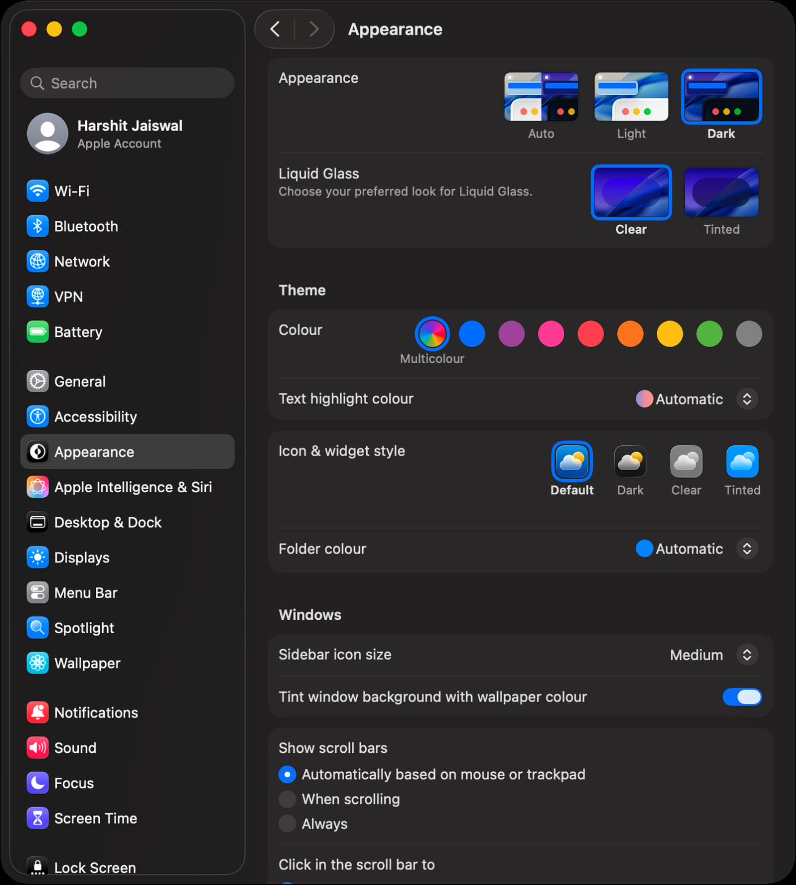
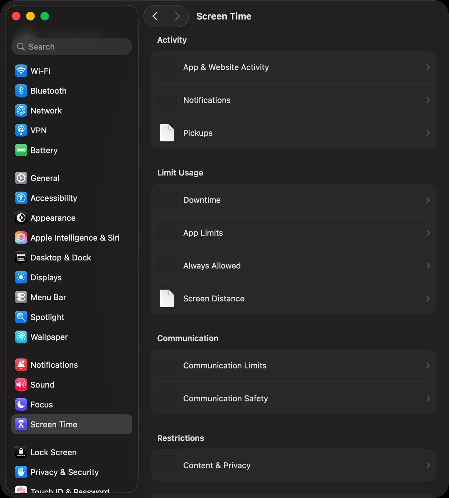
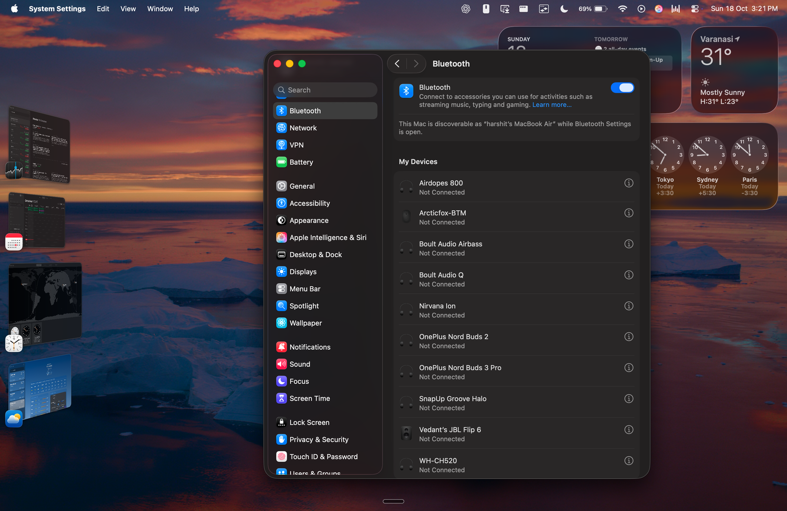
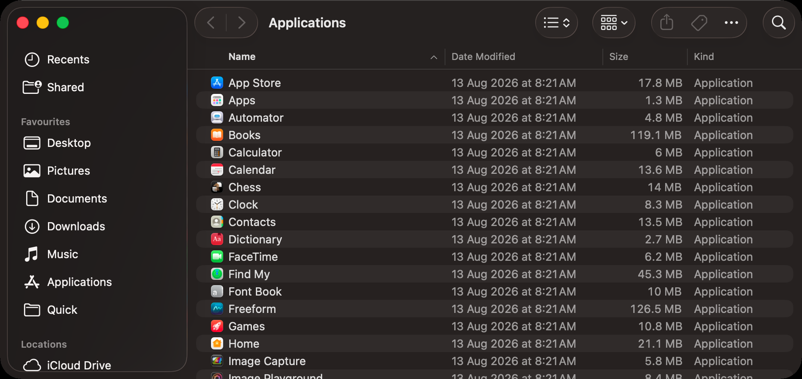
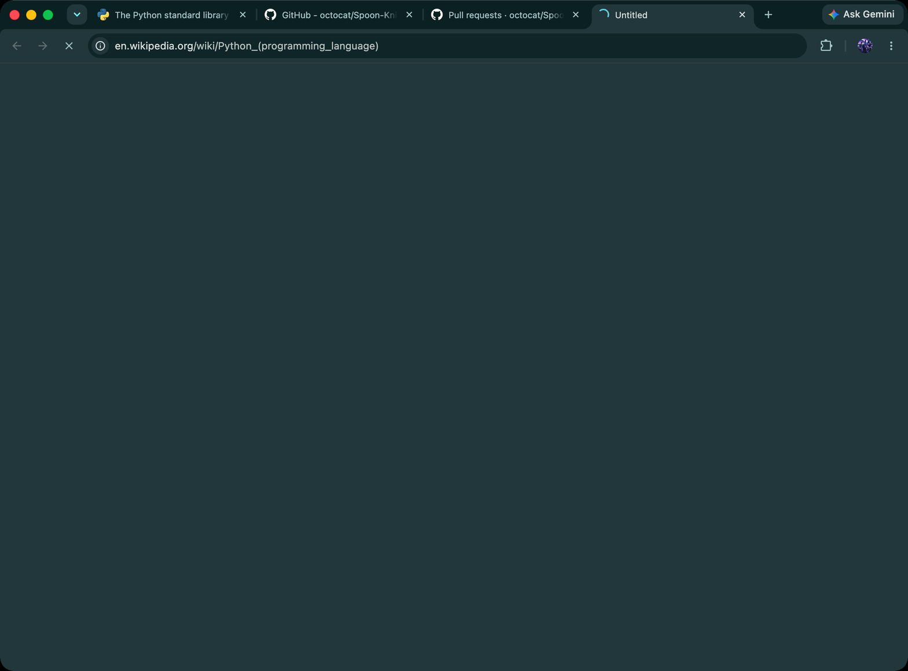
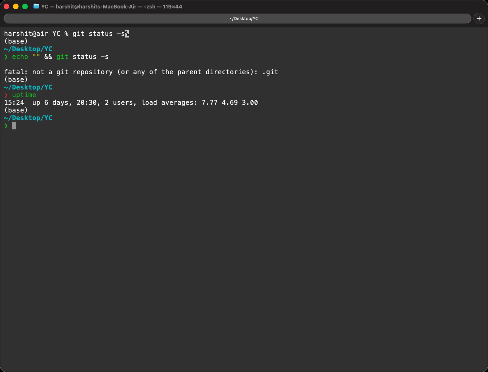
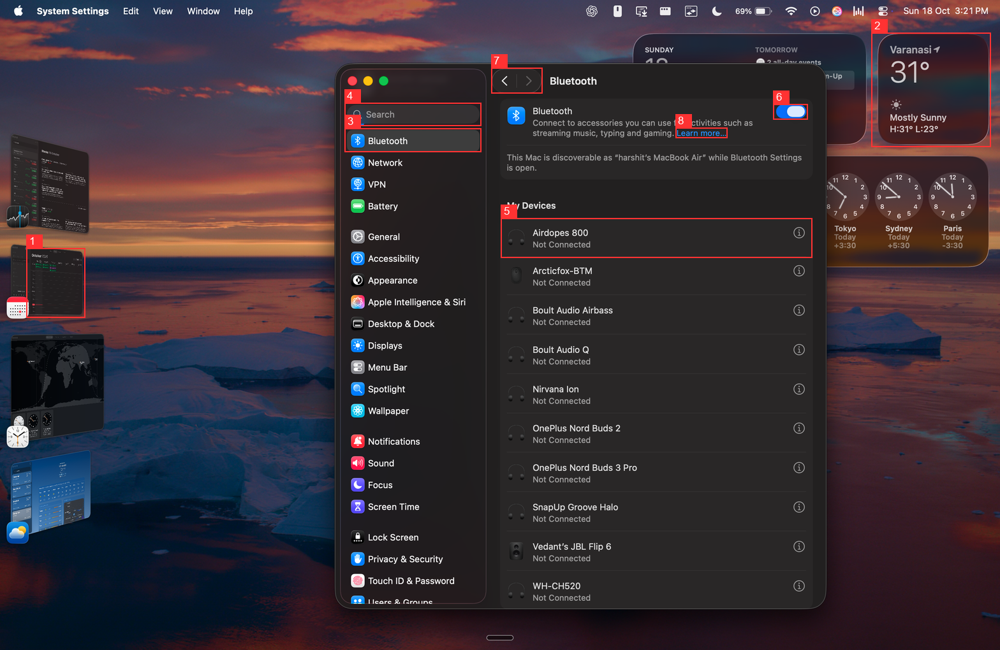

Six selected screenshots, one call per condition; 36 choices and 12 grounding targets per complete provider/condition. Descriptive pilot, not statistically conclusive. Ground point-hit uses predicted box center. Gemini 0–1000 coordinate outputs are also scored after division by 1000, with x/y order unchanged and raw format violations separately counted; strict_scores preserve original 0–1 scoring. Timings exclude student inference and detector. No teacher labels or teacher-added geometry supplied.
Conditions: same image alone; image plus raw detector boxes; image plus the identical boxes and actual trained-model labels. Cases were visually inspected before API calls. No desktop actions executed.
| Provider | Condition | Choices | Ground point hits | Mean IoU | Median API time |
|---|---|---|---|---|---|
| gemini-3.1-flash-lite | image | 35/36 | 9/12 | 0.43010478251040923 | 7.099299146502744 |
| gemini-3.1-flash-lite | boxes | 34/36 | 9/12 | 0.5970245139360963 | 14.856974770489614 |
| gemini-3.1-flash-lite | labels | 34/36 | 10/12 | 0.6719257673942668 | 5.5731808959681075 |
| gemini-3.5-flash-lite | image | 35/36 | 3/12 | 0.17807770576273693 | 4.95593214550172 |
| gemini-3.5-flash-lite | boxes | 33/36 | 0/12 | 0.011133529369827215 | 5.266042208502768 |
| gemini-3.5-flash-lite | labels | 33/36 | 5/12 | 0.3506615077890909 | 7.084915124985855 |
| jev-1.14.0 | image | 35/36 | 10/12 | 0.405871091154004 | 2.379006353992736 |
| jev-1.14.0 | boxes | 35/36 | 10/12 | 0.48450204120332957 | 2.4249451874929946 |
| jev-1.14.0 | labels | 35/36 | 10/12 | 0.5112342397798869 | 2.1727526879985817 |
{
"gemini-3.1-flash-lite": {
"boxes_vs_image": {
"choice_total": 36,
"choice_unchanged": 35,
"choice_hurt": 1,
"box_total": 12,
"box_hurt": 2,
"box_helped": 2,
"box_unchanged": 8
},
"labels_vs_boxes": {
"choice_total": 36,
"choice_unchanged": 34,
"choice_helped": 1,
"box_total": 12,
"box_unchanged": 9,
"choice_hurt": 1,
"box_helped": 2,
"box_hurt": 1
},
"labels_vs_image": {
"choice_total": 36,
"choice_unchanged": 35,
"box_total": 12,
"box_hurt": 2,
"box_helped": 3,
"box_unchanged": 7,
"choice_hurt": 1
}
},
"gemini-3.5-flash-lite": {
"boxes_vs_image": {
"choice_total": 36,
"choice_unchanged": 34,
"box_total": 12,
"box_unchanged": 9,
"choice_hurt": 2,
"box_hurt": 3
},
"labels_vs_boxes": {
"choice_total": 36,
"choice_unchanged": 36,
"box_total": 12,
"box_unchanged": 7,
"box_helped": 5
},
"labels_vs_image": {
"choice_total": 36,
"choice_unchanged": 34,
"box_total": 12,
"box_unchanged": 8,
"box_helped": 3,
"choice_hurt": 2,
"box_hurt": 1
}
},
"jev-1.14.0": {
"boxes_vs_image": {
"choice_total": 36,
"choice_unchanged": 36,
"box_total": 12,
"box_unchanged": 12
},
"labels_vs_boxes": {
"choice_total": 36,
"choice_unchanged": 36,
"box_total": 12,
"box_unchanged": 12
},
"labels_vs_image": {
"choice_total": 36,
"choice_unchanged": 36,
"box_total": 12,
"box_unchanged": 12
}
}
}
| Question | Reference | Provider / condition | Answer and score |
|---|---|---|---|
| Which appearance theme is selected in the screenshot in `image`. | Dark | jev-1.14.0 / labels | Dark {'type': 'choice', 'valid': True, 'correct': True} |
| Which appearance theme is selected in the screenshot in `image`. | Dark | gemini-3.5-flash-lite / labels | Dark {'type': 'choice', 'valid': True, 'correct': True} |
| Which appearance theme is selected in the screenshot in `image`. | Dark | gemini-3.1-flash-lite / boxes | Dark {'type': 'choice', 'valid': True, 'correct': True} |
| Which appearance theme is selected in the screenshot in `image`. | Dark | gemini-3.1-flash-lite / image | Dark {'type': 'choice', 'valid': True, 'correct': True} |
| Which appearance theme is selected in the screenshot in `image`. | Dark | jev-1.14.0 / boxes | Dark {'type': 'choice', 'valid': True, 'correct': True} |
| Which appearance theme is selected in the screenshot in `image`. | Dark | jev-1.14.0 / image | Dark {'type': 'choice', 'valid': True, 'correct': True} |
| Which appearance theme is selected in the screenshot in `image`. | Dark | gemini-3.5-flash-lite / boxes | Dark {'type': 'choice', 'valid': True, 'correct': True} |
| Which appearance theme is selected in the screenshot in `image`. | Dark | gemini-3.5-flash-lite / image | Dark {'type': 'choice', 'valid': True, 'correct': True} |
| Which appearance theme is selected in the screenshot in `image`. | Dark | gemini-3.1-flash-lite / labels | Dark {'type': 'choice', 'valid': True, 'correct': True} |
| Which Liquid Glass option is selected in the screenshot in `image`. | Clear | jev-1.14.0 / labels | Clear {'type': 'choice', 'valid': True, 'correct': True} |
| Which Liquid Glass option is selected in the screenshot in `image`. | Clear | gemini-3.5-flash-lite / labels | Clear {'type': 'choice', 'valid': True, 'correct': True} |
| Which Liquid Glass option is selected in the screenshot in `image`. | Clear | gemini-3.1-flash-lite / boxes | Clear {'type': 'choice', 'valid': True, 'correct': True} |
| Which Liquid Glass option is selected in the screenshot in `image`. | Clear | gemini-3.1-flash-lite / image | Clear {'type': 'choice', 'valid': True, 'correct': True} |
| Which Liquid Glass option is selected in the screenshot in `image`. | Clear | jev-1.14.0 / boxes | Clear {'type': 'choice', 'valid': True, 'correct': True} |
| Which Liquid Glass option is selected in the screenshot in `image`. | Clear | jev-1.14.0 / image | Clear {'type': 'choice', 'valid': True, 'correct': True} |
| Which Liquid Glass option is selected in the screenshot in `image`. | Clear | gemini-3.5-flash-lite / boxes | Clear {'type': 'choice', 'valid': True, 'correct': True} |
| Which Liquid Glass option is selected in the screenshot in `image`. | Clear | gemini-3.5-flash-lite / image | Clear {'type': 'choice', 'valid': True, 'correct': True} |
| Which Liquid Glass option is selected in the screenshot in `image`. | Clear | gemini-3.1-flash-lite / labels | Clear {'type': 'choice', 'valid': True, 'correct': True} |
| Which Show scroll bars radio option is selected in the screenshot in `image`. | Automatically based on mouse or trackpad | jev-1.14.0 / labels | Automatically based on mouse or trackpad {'type': 'choice', 'valid': True, 'correct': True} |
| Which Show scroll bars radio option is selected in the screenshot in `image`. | Automatically based on mouse or trackpad | gemini-3.5-flash-lite / labels | Automatically based on mouse or trackpad {'type': 'choice', 'valid': True, 'correct': True} |
| Which Show scroll bars radio option is selected in the screenshot in `image`. | Automatically based on mouse or trackpad | gemini-3.1-flash-lite / boxes | Automatically based on mouse or trackpad {'type': 'choice', 'valid': True, 'correct': True} |
| Which Show scroll bars radio option is selected in the screenshot in `image`. | Automatically based on mouse or trackpad | gemini-3.1-flash-lite / image | Automatically based on mouse or trackpad {'type': 'choice', 'valid': True, 'correct': True} |
| Which Show scroll bars radio option is selected in the screenshot in `image`. | Automatically based on mouse or trackpad | jev-1.14.0 / boxes | Automatically based on mouse or trackpad {'type': 'choice', 'valid': True, 'correct': True} |
| Which Show scroll bars radio option is selected in the screenshot in `image`. | Automatically based on mouse or trackpad | jev-1.14.0 / image | Automatically based on mouse or trackpad {'type': 'choice', 'valid': True, 'correct': True} |
| Which Show scroll bars radio option is selected in the screenshot in `image`. | Automatically based on mouse or trackpad | gemini-3.5-flash-lite / boxes | Automatically based on mouse or trackpad {'type': 'choice', 'valid': True, 'correct': True} |
| Which Show scroll bars radio option is selected in the screenshot in `image`. | Automatically based on mouse or trackpad | gemini-3.5-flash-lite / image | Automatically based on mouse or trackpad {'type': 'choice', 'valid': True, 'correct': True} |
| Which Show scroll bars radio option is selected in the screenshot in `image`. | Automatically based on mouse or trackpad | gemini-3.1-flash-lite / labels | Automatically based on mouse or trackpad {'type': 'choice', 'valid': True, 'correct': True} |
| What is the sidebar item immediately below Appearance in the screenshot in `image`. | Apple Intelligence & Siri | jev-1.14.0 / labels | Apple Intelligence & Siri {'type': 'choice', 'valid': True, 'correct': True} |
| What is the sidebar item immediately below Appearance in the screenshot in `image`. | Apple Intelligence & Siri | gemini-3.5-flash-lite / labels | Apple Intelligence & Siri {'type': 'choice', 'valid': True, 'correct': True} |
| What is the sidebar item immediately below Appearance in the screenshot in `image`. | Apple Intelligence & Siri | gemini-3.1-flash-lite / boxes | Apple Intelligence & Siri {'type': 'choice', 'valid': True, 'correct': True} |
| What is the sidebar item immediately below Appearance in the screenshot in `image`. | Apple Intelligence & Siri | gemini-3.1-flash-lite / image | Apple Intelligence & Siri {'type': 'choice', 'valid': True, 'correct': True} |
| What is the sidebar item immediately below Appearance in the screenshot in `image`. | Apple Intelligence & Siri | jev-1.14.0 / boxes | Apple Intelligence & Siri {'type': 'choice', 'valid': True, 'correct': True} |
| What is the sidebar item immediately below Appearance in the screenshot in `image`. | Apple Intelligence & Siri | jev-1.14.0 / image | Apple Intelligence & Siri {'type': 'choice', 'valid': True, 'correct': True} |
| What is the sidebar item immediately below Appearance in the screenshot in `image`. | Apple Intelligence & Siri | gemini-3.5-flash-lite / boxes | Apple Intelligence & Siri {'type': 'choice', 'valid': True, 'correct': True} |
| What is the sidebar item immediately below Appearance in the screenshot in `image`. | Apple Intelligence & Siri | gemini-3.5-flash-lite / image | Apple Intelligence & Siri {'type': 'choice', 'valid': True, 'correct': True} |
| What is the sidebar item immediately below Appearance in the screenshot in `image`. | Apple Intelligence & Siri | gemini-3.1-flash-lite / labels | Apple Intelligence & Siri {'type': 'choice', 'valid': True, 'correct': True} |
| What does the green circular window control at upper left normally do in the screenshot in `image`. | Maximize or enter full screen | jev-1.14.0 / labels | Maximize or enter full screen {'type': 'choice', 'valid': True, 'correct': True} |
| What does the green circular window control at upper left normally do in the screenshot in `image`. | Maximize or enter full screen | gemini-3.5-flash-lite / labels | Maximize or enter full screen {'type': 'choice', 'valid': True, 'correct': True} |
| What does the green circular window control at upper left normally do in the screenshot in `image`. | Maximize or enter full screen | gemini-3.1-flash-lite / boxes | Close window {'type': 'choice', 'valid': True, 'correct': False} |
| What does the green circular window control at upper left normally do in the screenshot in `image`. | Maximize or enter full screen | gemini-3.1-flash-lite / image | Maximize or enter full screen {'type': 'choice', 'valid': True, 'correct': True} |
| What does the green circular window control at upper left normally do in the screenshot in `image`. | Maximize or enter full screen | jev-1.14.0 / boxes | Maximize or enter full screen {'type': 'choice', 'valid': True, 'correct': True} |
| What does the green circular window control at upper left normally do in the screenshot in `image`. | Maximize or enter full screen | jev-1.14.0 / image | Maximize or enter full screen {'type': 'choice', 'valid': True, 'correct': True} |
| What does the green circular window control at upper left normally do in the screenshot in `image`. | Maximize or enter full screen | gemini-3.5-flash-lite / boxes | Maximize or enter full screen {'type': 'choice', 'valid': True, 'correct': True} |
| What does the green circular window control at upper left normally do in the screenshot in `image`. | Maximize or enter full screen | gemini-3.5-flash-lite / image | Maximize or enter full screen {'type': 'choice', 'valid': True, 'correct': True} |
| What does the green circular window control at upper left normally do in the screenshot in `image`. | Maximize or enter full screen | gemini-3.1-flash-lite / labels | Maximize or enter full screen {'type': 'choice', 'valid': True, 'correct': True} |
| Which icon and widget style is selected in the screenshot in `image`. | Default | jev-1.14.0 / labels | Default {'type': 'choice', 'valid': True, 'correct': True} |
| Which icon and widget style is selected in the screenshot in `image`. | Default | gemini-3.5-flash-lite / labels | Default {'type': 'choice', 'valid': True, 'correct': True} |
| Which icon and widget style is selected in the screenshot in `image`. | Default | gemini-3.1-flash-lite / boxes | Default {'type': 'choice', 'valid': True, 'correct': True} |
| Which icon and widget style is selected in the screenshot in `image`. | Default | gemini-3.1-flash-lite / image | Default {'type': 'choice', 'valid': True, 'correct': True} |
| Which icon and widget style is selected in the screenshot in `image`. | Default | jev-1.14.0 / boxes | Default {'type': 'choice', 'valid': True, 'correct': True} |
| Which icon and widget style is selected in the screenshot in `image`. | Default | jev-1.14.0 / image | Default {'type': 'choice', 'valid': True, 'correct': True} |
| Which icon and widget style is selected in the screenshot in `image`. | Default | gemini-3.5-flash-lite / boxes | Default {'type': 'choice', 'valid': True, 'correct': True} |
| Which icon and widget style is selected in the screenshot in `image`. | Default | gemini-3.5-flash-lite / image | Default {'type': 'choice', 'valid': True, 'correct': True} |
| Which icon and widget style is selected in the screenshot in `image`. | Default | gemini-3.1-flash-lite / labels | Default {'type': 'choice', 'valid': True, 'correct': True} |
| The Apple Intelligence & Siri sidebar row in the screenshot in `image`. | [0.024805102763997167, 0.5318877551020408, 0.293408929836995, 0.5688775510204082] | jev-1.14.0 / labels | [0.02, 0.53, 0.3, 0.57] {'type': 'box', 'valid': True, 'point_hit': True, 'iou': 0.8871072094930939} |
| The Apple Intelligence & Siri sidebar row in the screenshot in `image`. | [0.024805102763997167, 0.5318877551020408, 0.293408929836995, 0.5688775510204082] | gemini-3.5-flash-lite / labels | [0.530662, 0.017455, 0.572104, 0.297961] {'type': 'box', 'valid': True, 'point_hit': False, 'iou': 0.0} |
| The Apple Intelligence & Siri sidebar row in the screenshot in `image`. | [0.024805102763997167, 0.5318877551020408, 0.293408929836995, 0.5688775510204082] | gemini-3.1-flash-lite / boxes | [0.010049, 0.353577, 0.295943, 0.40402] {'type': 'box', 'valid': True, 'point_hit': False, 'iou': 0.0} |
| The Apple Intelligence & Siri sidebar row in the screenshot in `image`. | [0.024805102763997167, 0.5318877551020408, 0.293408929836995, 0.5688775510204082] | gemini-3.1-flash-lite / image | [32, 535, 300, 567] {'type': 'box', 'valid': True, 'point_hit': True, 'iou': 0.8244294481168648} |
| The Apple Intelligence & Siri sidebar row in the screenshot in `image`. | [0.024805102763997167, 0.5318877551020408, 0.293408929836995, 0.5688775510204082] | jev-1.14.0 / boxes | [0.02, 0.53, 0.29, 0.57] {'type': 'box', 'valid': True, 'point_hit': True, 'iou': 0.8978051693342661} |
| The Apple Intelligence & Siri sidebar row in the screenshot in `image`. | [0.024805102763997167, 0.5318877551020408, 0.293408929836995, 0.5688775510204082] | jev-1.14.0 / image | [0.02, 0.53, 0.29, 0.56] {'type': 'box', 'valid': True, 'point_hit': True, 'iou': 0.7046274440702285} |
| The Apple Intelligence & Siri sidebar row in the screenshot in `image`. | [0.024805102763997167, 0.5318877551020408, 0.293408929836995, 0.5688775510204082] | gemini-3.5-flash-lite / boxes | [0.530662, 0.017455, 0.572104, 0.297961] {'type': 'box', 'valid': True, 'point_hit': False, 'iou': 0.0} |
| The Apple Intelligence & Siri sidebar row in the screenshot in `image`. | [0.024805102763997167, 0.5318877551020408, 0.293408929836995, 0.5688775510204082] | gemini-3.5-flash-lite / image | [33, 535, 363, 668] {'type': 'box', 'valid': True, 'point_hit': False, 'iou': 0.19602920555311443} |
| The Apple Intelligence & Siri sidebar row in the screenshot in `image`. | [0.024805102763997167, 0.5318877551020408, 0.293408929836995, 0.5688775510204082] | gemini-3.1-flash-lite / labels | [0.011928, 0.5702, 0.300083, 0.612041] {'type': 'box', 'valid': True, 'point_hit': False, 'iou': 0.0} |
| The green circular window control at upper left in the screenshot in `image`. | [0.0892983699503898, 0.022321428571428572, 0.10985116938341602, 0.04272959183673469] | jev-1.14.0 / labels | [0.06, 0.03, 0.1, 0.04] {'type': 'box', 'valid': True, 'point_hit': False, 'iou': 0.15021337242115781} |
| The green circular window control at upper left in the screenshot in `image`. | [0.0892983699503898, 0.022321428571428572, 0.10985116938341602, 0.04272959183673469] | gemini-3.5-flash-lite / labels | [0.020974, 0.021609, 0.045325, 0.049424] {'type': 'box', 'valid': True, 'point_hit': False, 'iou': 0.0} |
| The green circular window control at upper left in the screenshot in `image`. | [0.0892983699503898, 0.022321428571428572, 0.10985116938341602, 0.04272959183673469] | gemini-3.1-flash-lite / boxes | [0.088239, 0.021916, 0.113169, 0.04465] {'type': 'box', 'valid': True, 'point_hit': True, 'iou': 0.7400767656401769} |
| The green circular window control at upper left in the screenshot in `image`. | [0.0892983699503898, 0.022321428571428572, 0.10985116938341602, 0.04272959183673469] | gemini-3.1-flash-lite / image | [23, 23, 39, 39] {'type': 'box', 'valid': True, 'point_hit': False, 'iou': 0.0} |
| The green circular window control at upper left in the screenshot in `image`. | [0.0892983699503898, 0.022321428571428572, 0.10985116938341602, 0.04272959183673469] | jev-1.14.0 / boxes | [0.06, 0.02, 0.1, 0.04] {'type': 'box', 'valid': True, 'point_hit': False, 'iou': 0.1836336305244254} |
| The green circular window control at upper left in the screenshot in `image`. | [0.0892983699503898, 0.022321428571428572, 0.10985116938341602, 0.04272959183673469] | jev-1.14.0 / image | [0.04, 0.02, 0.07, 0.04] {'type': 'box', 'valid': True, 'point_hit': False, 'iou': 0.0} |
| The green circular window control at upper left in the screenshot in `image`. | [0.0892983699503898, 0.022321428571428572, 0.10985116938341602, 0.04272959183673469] | gemini-3.5-flash-lite / boxes | [0.020974, 0.021609, 0.045325, 0.049424] {'type': 'box', 'valid': True, 'point_hit': False, 'iou': 0.0} |
| The green circular window control at upper left in the screenshot in `image`. | [0.0892983699503898, 0.022321428571428572, 0.10985116938341602, 0.04272959183673469] | gemini-3.5-flash-lite / image | [25, 89, 41, 110] {'type': 'box', 'valid': True, 'point_hit': False, 'iou': 0.0} |
| The green circular window control at upper left in the screenshot in `image`. | [0.0892983699503898, 0.022321428571428572, 0.10985116938341602, 0.04272959183673469] | gemini-3.1-flash-lite / labels | [0.088239, 0.021916, 0.113169, 0.04465] {'type': 'box', 'valid': True, 'point_hit': True, 'iou': 0.7400767656401769} |

| Question | Reference | Provider / condition | Answer and score |
|---|---|---|---|
| What is the title at the top of the main pane in the screenshot in `image`. | Screen Time | jev-1.14.0 / image | Screen Time {'type': 'choice', 'valid': True, 'correct': True} |
| What is the title at the top of the main pane in the screenshot in `image`. | Screen Time | jev-1.14.0 / boxes | Screen Time {'type': 'choice', 'valid': True, 'correct': True} |
| What is the title at the top of the main pane in the screenshot in `image`. | Screen Time | gemini-3.5-flash-lite / image | Screen Time {'type': 'choice', 'valid': True, 'correct': True} |
| What is the title at the top of the main pane in the screenshot in `image`. | Screen Time | gemini-3.5-flash-lite / boxes | Screen Time {'type': 'choice', 'valid': True, 'correct': True} |
| What is the title at the top of the main pane in the screenshot in `image`. | Screen Time | gemini-3.1-flash-lite / labels | Screen Time {'type': 'choice', 'valid': True, 'correct': True} |
| What is the title at the top of the main pane in the screenshot in `image`. | Screen Time | gemini-3.5-flash-lite / labels | Screen Time {'type': 'choice', 'valid': True, 'correct': True} |
| What is the title at the top of the main pane in the screenshot in `image`. | Screen Time | gemini-3.1-flash-lite / image | Screen Time {'type': 'choice', 'valid': True, 'correct': True} |
| What is the title at the top of the main pane in the screenshot in `image`. | Screen Time | gemini-3.1-flash-lite / boxes | Screen Time {'type': 'choice', 'valid': True, 'correct': True} |
| What is the title at the top of the main pane in the screenshot in `image`. | Screen Time | jev-1.14.0 / labels | Screen Time {'type': 'choice', 'valid': True, 'correct': True} |
| What is the first row under Limit Usage in the screenshot in `image`. | Downtime | jev-1.14.0 / image | Downtime {'type': 'choice', 'valid': True, 'correct': True} |
| What is the first row under Limit Usage in the screenshot in `image`. | Downtime | jev-1.14.0 / boxes | Downtime {'type': 'choice', 'valid': True, 'correct': True} |
| What is the first row under Limit Usage in the screenshot in `image`. | Downtime | gemini-3.5-flash-lite / image | Downtime {'type': 'choice', 'valid': True, 'correct': True} |
| What is the first row under Limit Usage in the screenshot in `image`. | Downtime | gemini-3.5-flash-lite / boxes | Downtime {'type': 'choice', 'valid': True, 'correct': True} |
| What is the first row under Limit Usage in the screenshot in `image`. | Downtime | gemini-3.1-flash-lite / labels | Downtime {'type': 'choice', 'valid': True, 'correct': True} |
| What is the first row under Limit Usage in the screenshot in `image`. | Downtime | gemini-3.5-flash-lite / labels | Downtime {'type': 'choice', 'valid': True, 'correct': True} |
| What is the first row under Limit Usage in the screenshot in `image`. | Downtime | gemini-3.1-flash-lite / image | Downtime {'type': 'choice', 'valid': True, 'correct': True} |
| What is the first row under Limit Usage in the screenshot in `image`. | Downtime | gemini-3.1-flash-lite / boxes | Downtime {'type': 'choice', 'valid': True, 'correct': True} |
| What is the first row under Limit Usage in the screenshot in `image`. | Downtime | jev-1.14.0 / labels | Downtime {'type': 'choice', 'valid': True, 'correct': True} |
| Which sidebar category is visibly selected in the screenshot in `image`. | Screen Time | jev-1.14.0 / image | Screen Time {'type': 'choice', 'valid': True, 'correct': True} |
| Which sidebar category is visibly selected in the screenshot in `image`. | Screen Time | jev-1.14.0 / boxes | Screen Time {'type': 'choice', 'valid': True, 'correct': True} |
| Which sidebar category is visibly selected in the screenshot in `image`. | Screen Time | gemini-3.5-flash-lite / image | Screen Time {'type': 'choice', 'valid': True, 'correct': True} |
| Which sidebar category is visibly selected in the screenshot in `image`. | Screen Time | gemini-3.5-flash-lite / boxes | Screen Time {'type': 'choice', 'valid': True, 'correct': True} |
| Which sidebar category is visibly selected in the screenshot in `image`. | Screen Time | gemini-3.1-flash-lite / labels | Screen Time {'type': 'choice', 'valid': True, 'correct': True} |
| Which sidebar category is visibly selected in the screenshot in `image`. | Screen Time | gemini-3.5-flash-lite / labels | Screen Time {'type': 'choice', 'valid': True, 'correct': True} |
| Which sidebar category is visibly selected in the screenshot in `image`. | Screen Time | gemini-3.1-flash-lite / image | Screen Time {'type': 'choice', 'valid': True, 'correct': True} |
| Which sidebar category is visibly selected in the screenshot in `image`. | Screen Time | gemini-3.1-flash-lite / boxes | Screen Time {'type': 'choice', 'valid': True, 'correct': True} |
| Which sidebar category is visibly selected in the screenshot in `image`. | Screen Time | jev-1.14.0 / labels | Screen Time {'type': 'choice', 'valid': True, 'correct': True} |
| Which row immediately follows App Limits in the screenshot in `image`. | Always Allowed | jev-1.14.0 / image | Always Allowed {'type': 'choice', 'valid': True, 'correct': True} |
| Which row immediately follows App Limits in the screenshot in `image`. | Always Allowed | jev-1.14.0 / boxes | Always Allowed {'type': 'choice', 'valid': True, 'correct': True} |
| Which row immediately follows App Limits in the screenshot in `image`. | Always Allowed | gemini-3.5-flash-lite / image | Always Allowed {'type': 'choice', 'valid': True, 'correct': True} |
| Which row immediately follows App Limits in the screenshot in `image`. | Always Allowed | gemini-3.5-flash-lite / boxes | Always Allowed {'type': 'choice', 'valid': True, 'correct': True} |
| Which row immediately follows App Limits in the screenshot in `image`. | Always Allowed | gemini-3.1-flash-lite / labels | Always Allowed {'type': 'choice', 'valid': True, 'correct': True} |
| Which row immediately follows App Limits in the screenshot in `image`. | Always Allowed | gemini-3.5-flash-lite / labels | Always Allowed {'type': 'choice', 'valid': True, 'correct': True} |
| Which row immediately follows App Limits in the screenshot in `image`. | Always Allowed | gemini-3.1-flash-lite / image | Always Allowed {'type': 'choice', 'valid': True, 'correct': True} |
| Which row immediately follows App Limits in the screenshot in `image`. | Always Allowed | gemini-3.1-flash-lite / boxes | Always Allowed {'type': 'choice', 'valid': True, 'correct': True} |
| Which row immediately follows App Limits in the screenshot in `image`. | Always Allowed | jev-1.14.0 / labels | Always Allowed {'type': 'choice', 'valid': True, 'correct': True} |
| What is displayed in the Activity section in the screenshot in `image`. | App & Website Activity, Notifications, and Pickups rows | jev-1.14.0 / image | App & Website Activity, Notifications, and Pickups rows {'type': 'choice', 'valid': True, 'correct': True} |
| What is displayed in the Activity section in the screenshot in `image`. | App & Website Activity, Notifications, and Pickups rows | jev-1.14.0 / boxes | App & Website Activity, Notifications, and Pickups rows {'type': 'choice', 'valid': True, 'correct': True} |
| What is displayed in the Activity section in the screenshot in `image`. | App & Website Activity, Notifications, and Pickups rows | gemini-3.5-flash-lite / image | App & Website Activity, Notifications, and Pickups rows {'type': 'choice', 'valid': True, 'correct': True} |
| What is displayed in the Activity section in the screenshot in `image`. | App & Website Activity, Notifications, and Pickups rows | gemini-3.5-flash-lite / boxes | App & Website Activity, Notifications, and Pickups rows {'type': 'choice', 'valid': True, 'correct': True} |
| What is displayed in the Activity section in the screenshot in `image`. | App & Website Activity, Notifications, and Pickups rows | gemini-3.1-flash-lite / labels | App & Website Activity, Notifications, and Pickups rows {'type': 'choice', 'valid': True, 'correct': True} |
| What is displayed in the Activity section in the screenshot in `image`. | App & Website Activity, Notifications, and Pickups rows | gemini-3.5-flash-lite / labels | App & Website Activity, Notifications, and Pickups rows {'type': 'choice', 'valid': True, 'correct': True} |
| What is displayed in the Activity section in the screenshot in `image`. | App & Website Activity, Notifications, and Pickups rows | gemini-3.1-flash-lite / image | App & Website Activity, Notifications, and Pickups rows {'type': 'choice', 'valid': True, 'correct': True} |
| What is displayed in the Activity section in the screenshot in `image`. | App & Website Activity, Notifications, and Pickups rows | gemini-3.1-flash-lite / boxes | App & Website Activity, Notifications, and Pickups rows {'type': 'choice', 'valid': True, 'correct': True} |
| What is displayed in the Activity section in the screenshot in `image`. | App & Website Activity, Notifications, and Pickups rows | jev-1.14.0 / labels | App & Website Activity, Notifications, and Pickups rows {'type': 'choice', 'valid': True, 'correct': True} |
| Which of these belongs in the Communication section in the screenshot in `image`. | Communication Safety | jev-1.14.0 / image | Communication Safety {'type': 'choice', 'valid': True, 'correct': True} |
| Which of these belongs in the Communication section in the screenshot in `image`. | Communication Safety | jev-1.14.0 / boxes | Communication Safety {'type': 'choice', 'valid': True, 'correct': True} |
| Which of these belongs in the Communication section in the screenshot in `image`. | Communication Safety | gemini-3.5-flash-lite / image | Communication Safety {'type': 'choice', 'valid': True, 'correct': True} |
| Which of these belongs in the Communication section in the screenshot in `image`. | Communication Safety | gemini-3.5-flash-lite / boxes | Communication Safety {'type': 'choice', 'valid': True, 'correct': True} |
| Which of these belongs in the Communication section in the screenshot in `image`. | Communication Safety | gemini-3.1-flash-lite / labels | Communication Safety {'type': 'choice', 'valid': True, 'correct': True} |
| Which of these belongs in the Communication section in the screenshot in `image`. | Communication Safety | gemini-3.5-flash-lite / labels | Communication Safety {'type': 'choice', 'valid': True, 'correct': True} |
| Which of these belongs in the Communication section in the screenshot in `image`. | Communication Safety | gemini-3.1-flash-lite / image | Communication Safety {'type': 'choice', 'valid': True, 'correct': True} |
| Which of these belongs in the Communication section in the screenshot in `image`. | Communication Safety | gemini-3.1-flash-lite / boxes | Communication Safety {'type': 'choice', 'valid': True, 'correct': True} |
| Which of these belongs in the Communication section in the screenshot in `image`. | Communication Safety | jev-1.14.0 / labels | Communication Safety {'type': 'choice', 'valid': True, 'correct': True} |
| The App Limits row in the main pane in the screenshot in `image`. | [0.34419263456090654, 0.4362244897959184, 0.9702549575070821, 0.5012755102040817] | jev-1.14.0 / image | [0.34, 0.44, 0.97, 0.48] {'type': 'box', 'valid': True, 'point_hit': True, 'iou': 0.6121308573280984} |
| The App Limits row in the main pane in the screenshot in `image`. | [0.34419263456090654, 0.4362244897959184, 0.9702549575070821, 0.5012755102040817] | jev-1.14.0 / boxes | [0.34, 0.44, 0.97, 0.5] {'type': 'box', 'valid': True, 'point_hit': True, 'iou': 0.9163173735698662} |
| The App Limits row in the main pane in the screenshot in `image`. | [0.34419263456090654, 0.4362244897959184, 0.9702549575070821, 0.5012755102040817] | gemini-3.5-flash-lite / image | [376, 434, 498, 974] {'type': 'box', 'valid': True, 'point_hit': False, 'iou': 0.08043217911530716} |
| The App Limits row in the main pane in the screenshot in `image`. | [0.34419263456090654, 0.4362244897959184, 0.9702549575070821, 0.5012755102040817] | gemini-3.5-flash-lite / boxes | [0.434577, 0.339198, 0.501893, 0.966549] {'type': 'box', 'valid': True, 'point_hit': False, 'iou': 0.055727898910704295} |
| The App Limits row in the main pane in the screenshot in `image`. | [0.34419263456090654, 0.4362244897959184, 0.9702549575070821, 0.5012755102040817] | gemini-3.1-flash-lite / labels | [0.339198, 0.434577, 0.966549, 0.501893] {'type': 'box', 'valid': True, 'point_hit': True, 'iou': 0.9532179491092377} |
| The App Limits row in the main pane in the screenshot in `image`. | [0.34419263456090654, 0.4362244897959184, 0.9702549575070821, 0.5012755102040817] | gemini-3.5-flash-lite / labels | [0.339198, 0.434577, 0.966549, 0.501893] {'type': 'box', 'valid': True, 'point_hit': True, 'iou': 0.9532179491092377} |
| The App Limits row in the main pane in the screenshot in `image`. | [0.34419263456090654, 0.4362244897959184, 0.9702549575070821, 0.5012755102040817] | gemini-3.1-flash-lite / image | [343, 443, 966, 495] {'type': 'box', 'valid': True, 'point_hit': True, 'iou': 0.7927325468265934} |
| The App Limits row in the main pane in the screenshot in `image`. | [0.34419263456090654, 0.4362244897959184, 0.9702549575070821, 0.5012755102040817] | gemini-3.1-flash-lite / boxes | [0.342054, 0.434577, 0.969564, 0.501893] {'type': 'box', 'valid': True, 'point_hit': True, 'iou': 0.9620359077461439} |
| The App Limits row in the main pane in the screenshot in `image`. | [0.34419263456090654, 0.4362244897959184, 0.9702549575070821, 0.5012755102040817] | jev-1.14.0 / labels | [0.34, 0.44, 0.97, 0.49] {'type': 'box', 'valid': True, 'point_hit': True, 'iou': 0.7643798896567888} |
| The Screen Distance row in the main pane in the screenshot in `image`. | [0.34419263456090654, 0.5656887755102041, 0.9702549575070821, 0.6294642857142857] | jev-1.14.0 / image | [0.34, 0.57, 0.97, 0.63] {'type': 'box', 'valid': True, 'point_hit': True, 'iou': 0.9185208264127983} |
| The Screen Distance row in the main pane in the screenshot in `image`. | [0.34419263456090654, 0.5656887755102041, 0.9702549575070821, 0.6294642857142857] | jev-1.14.0 / boxes | [0.34, 0.57, 0.97, 0.64] {'type': 'box', 'valid': True, 'point_hit': True, 'iou': 0.7949114456312284} |
| The Screen Distance row in the main pane in the screenshot in `image`. | [0.34419263456090654, 0.5656887755102041, 0.9702549575070821, 0.6294642857142857] | gemini-3.5-flash-lite / image | [566, 434, 630, 974] {'type': 'box', 'valid': True, 'point_hit': False, 'iou': 0.05797295097068234} |
| The Screen Distance row in the main pane in the screenshot in `image`. | [0.34419263456090654, 0.5656887755102041, 0.9702549575070821, 0.6294642857142857] | gemini-3.5-flash-lite / boxes | [0.567572, 0.342185, 0.635386, 0.969564] {'type': 'box', 'valid': True, 'point_hit': False, 'iou': 0.055342321705895904} |
| The Screen Distance row in the main pane in the screenshot in `image`. | [0.34419263456090654, 0.5656887755102041, 0.9702549575070821, 0.6294642857142857] | gemini-3.1-flash-lite / labels | [0.342185, 0.567572, 0.969564, 0.635386] {'type': 'box', 'valid': True, 'point_hit': True, 'iou': 0.884360059710292} |
| The Screen Distance row in the main pane in the screenshot in `image`. | [0.34419263456090654, 0.5656887755102041, 0.9702549575070821, 0.6294642857142857] | gemini-3.5-flash-lite / labels | [0.342185, 0.567572, 0.969564, 0.635386] {'type': 'box', 'valid': True, 'point_hit': True, 'iou': 0.884360059710292} |
| The Screen Distance row in the main pane in the screenshot in `image`. | [0.34419263456090654, 0.5656887755102041, 0.9702549575070821, 0.6294642857142857] | gemini-3.1-flash-lite / image | [343, 575, 966, 627] {'type': 'box', 'valid': True, 'point_hit': True, 'iou': 0.8085626098388071} |
| The Screen Distance row in the main pane in the screenshot in `image`. | [0.34419263456090654, 0.5656887755102041, 0.9702549575070821, 0.6294642857142857] | gemini-3.1-flash-lite / boxes | [0.342054, 0.567572, 0.969564, 0.635386] {'type': 'box', 'valid': True, 'point_hit': True, 'iou': 0.8841805920329725} |
| The Screen Distance row in the main pane in the screenshot in `image`. | [0.34419263456090654, 0.5656887755102041, 0.9702549575070821, 0.6294642857142857] | jev-1.14.0 / labels | [0.34, 0.57, 0.97, 0.64] {'type': 'box', 'valid': True, 'point_hit': True, 'iou': 0.7949114456312284} |

| Question | Reference | Provider / condition | Answer and score |
|---|---|---|---|
| Which settings page is open in the foreground window in the screenshot in `image`. | Bluetooth | gemini-3.5-flash-lite / boxes | Bluetooth {'type': 'choice', 'valid': True, 'correct': True} |
| Which settings page is open in the foreground window in the screenshot in `image`. | Bluetooth | gemini-3.5-flash-lite / image | Bluetooth {'type': 'choice', 'valid': True, 'correct': True} |
| Which settings page is open in the foreground window in the screenshot in `image`. | Bluetooth | jev-1.14.0 / boxes | Bluetooth {'type': 'choice', 'valid': True, 'correct': True} |
| Which settings page is open in the foreground window in the screenshot in `image`. | Bluetooth | jev-1.14.0 / image | Bluetooth {'type': 'choice', 'valid': True, 'correct': True} |
| Which settings page is open in the foreground window in the screenshot in `image`. | Bluetooth | gemini-3.1-flash-lite / labels | Bluetooth {'type': 'choice', 'valid': True, 'correct': True} |
| Which settings page is open in the foreground window in the screenshot in `image`. | Bluetooth | jev-1.14.0 / labels | Bluetooth {'type': 'choice', 'valid': True, 'correct': True} |
| Which settings page is open in the foreground window in the screenshot in `image`. | Bluetooth | gemini-3.1-flash-lite / boxes | Bluetooth {'type': 'choice', 'valid': True, 'correct': True} |
| Which settings page is open in the foreground window in the screenshot in `image`. | Bluetooth | gemini-3.1-flash-lite / image | Bluetooth {'type': 'choice', 'valid': True, 'correct': True} |
| Which settings page is open in the foreground window in the screenshot in `image`. | Bluetooth | gemini-3.5-flash-lite / labels | Bluetooth {'type': 'choice', 'valid': True, 'correct': True} |
| Is the Bluetooth toggle visually on or off in the screenshot in `image`. | On | gemini-3.5-flash-lite / boxes | On {'type': 'choice', 'valid': True, 'correct': True} |
| Is the Bluetooth toggle visually on or off in the screenshot in `image`. | On | gemini-3.5-flash-lite / image | On {'type': 'choice', 'valid': True, 'correct': True} |
| Is the Bluetooth toggle visually on or off in the screenshot in `image`. | On | jev-1.14.0 / boxes | On {'type': 'choice', 'valid': True, 'correct': True} |
| Is the Bluetooth toggle visually on or off in the screenshot in `image`. | On | jev-1.14.0 / image | On {'type': 'choice', 'valid': True, 'correct': True} |
| Is the Bluetooth toggle visually on or off in the screenshot in `image`. | On | gemini-3.1-flash-lite / labels | Off {'type': 'choice', 'valid': True, 'correct': False} |
| Is the Bluetooth toggle visually on or off in the screenshot in `image`. | On | jev-1.14.0 / labels | On {'type': 'choice', 'valid': True, 'correct': True} |
| Is the Bluetooth toggle visually on or off in the screenshot in `image`. | On | gemini-3.1-flash-lite / boxes | On {'type': 'choice', 'valid': True, 'correct': True} |
| Is the Bluetooth toggle visually on or off in the screenshot in `image`. | On | gemini-3.1-flash-lite / image | On {'type': 'choice', 'valid': True, 'correct': True} |
| Is the Bluetooth toggle visually on or off in the screenshot in `image`. | On | gemini-3.5-flash-lite / labels | On {'type': 'choice', 'valid': True, 'correct': True} |
| What connection status is shown for Airdopes 800 in the screenshot in `image`. | Not Connected | gemini-3.5-flash-lite / boxes | Not Connected {'type': 'choice', 'valid': True, 'correct': True} |
| What connection status is shown for Airdopes 800 in the screenshot in `image`. | Not Connected | gemini-3.5-flash-lite / image | Not Connected {'type': 'choice', 'valid': True, 'correct': True} |
| What connection status is shown for Airdopes 800 in the screenshot in `image`. | Not Connected | jev-1.14.0 / boxes | Not Connected {'type': 'choice', 'valid': True, 'correct': True} |
| What connection status is shown for Airdopes 800 in the screenshot in `image`. | Not Connected | jev-1.14.0 / image | Not Connected {'type': 'choice', 'valid': True, 'correct': True} |
| What connection status is shown for Airdopes 800 in the screenshot in `image`. | Not Connected | gemini-3.1-flash-lite / labels | Not Connected {'type': 'choice', 'valid': True, 'correct': True} |
| What connection status is shown for Airdopes 800 in the screenshot in `image`. | Not Connected | jev-1.14.0 / labels | Not Connected {'type': 'choice', 'valid': True, 'correct': True} |
| What connection status is shown for Airdopes 800 in the screenshot in `image`. | Not Connected | gemini-3.1-flash-lite / boxes | Not Connected {'type': 'choice', 'valid': True, 'correct': True} |
| What connection status is shown for Airdopes 800 in the screenshot in `image`. | Not Connected | gemini-3.1-flash-lite / image | Not Connected {'type': 'choice', 'valid': True, 'correct': True} |
| What connection status is shown for Airdopes 800 in the screenshot in `image`. | Not Connected | gemini-3.5-flash-lite / labels | Not Connected {'type': 'choice', 'valid': True, 'correct': True} |
| What does the stacked preview on the left with a month grid depict in the screenshot in `image`. | Calendar app preview | gemini-3.5-flash-lite / boxes | Calendar app preview {'type': 'choice', 'valid': True, 'correct': True} |
| What does the stacked preview on the left with a month grid depict in the screenshot in `image`. | Calendar app preview | gemini-3.5-flash-lite / image | Calendar app preview {'type': 'choice', 'valid': True, 'correct': True} |
| What does the stacked preview on the left with a month grid depict in the screenshot in `image`. | Calendar app preview | jev-1.14.0 / boxes | Calendar app preview {'type': 'choice', 'valid': True, 'correct': True} |
| What does the stacked preview on the left with a month grid depict in the screenshot in `image`. | Calendar app preview | jev-1.14.0 / image | Calendar app preview {'type': 'choice', 'valid': True, 'correct': True} |
| What does the stacked preview on the left with a month grid depict in the screenshot in `image`. | Calendar app preview | gemini-3.1-flash-lite / labels | Calendar app preview {'type': 'choice', 'valid': True, 'correct': True} |
| What does the stacked preview on the left with a month grid depict in the screenshot in `image`. | Calendar app preview | jev-1.14.0 / labels | Calendar app preview {'type': 'choice', 'valid': True, 'correct': True} |
| What does the stacked preview on the left with a month grid depict in the screenshot in `image`. | Calendar app preview | gemini-3.1-flash-lite / boxes | Calendar app preview {'type': 'choice', 'valid': True, 'correct': True} |
| What does the stacked preview on the left with a month grid depict in the screenshot in `image`. | Calendar app preview | gemini-3.1-flash-lite / image | Calendar app preview {'type': 'choice', 'valid': True, 'correct': True} |
| What does the stacked preview on the left with a month grid depict in the screenshot in `image`. | Calendar app preview | gemini-3.5-flash-lite / labels | Calendar app preview {'type': 'choice', 'valid': True, 'correct': True} |
| What temperature is shown in the Varanasi weather widget in the screenshot in `image`. | 31 degrees | gemini-3.5-flash-lite / boxes | 31 degrees {'type': 'choice', 'valid': True, 'correct': True} |
| What temperature is shown in the Varanasi weather widget in the screenshot in `image`. | 31 degrees | gemini-3.5-flash-lite / image | 31 degrees {'type': 'choice', 'valid': True, 'correct': True} |
| What temperature is shown in the Varanasi weather widget in the screenshot in `image`. | 31 degrees | jev-1.14.0 / boxes | 31 degrees {'type': 'choice', 'valid': True, 'correct': True} |
| What temperature is shown in the Varanasi weather widget in the screenshot in `image`. | 31 degrees | jev-1.14.0 / image | 31 degrees {'type': 'choice', 'valid': True, 'correct': True} |
| What temperature is shown in the Varanasi weather widget in the screenshot in `image`. | 31 degrees | gemini-3.1-flash-lite / labels | 31 degrees {'type': 'choice', 'valid': True, 'correct': True} |
| What temperature is shown in the Varanasi weather widget in the screenshot in `image`. | 31 degrees | jev-1.14.0 / labels | 31 degrees {'type': 'choice', 'valid': True, 'correct': True} |
| What temperature is shown in the Varanasi weather widget in the screenshot in `image`. | 31 degrees | gemini-3.1-flash-lite / boxes | 31 degrees {'type': 'choice', 'valid': True, 'correct': True} |
| What temperature is shown in the Varanasi weather widget in the screenshot in `image`. | 31 degrees | gemini-3.1-flash-lite / image | 31 degrees {'type': 'choice', 'valid': True, 'correct': True} |
| What temperature is shown in the Varanasi weather widget in the screenshot in `image`. | 31 degrees | gemini-3.5-flash-lite / labels | 31 degrees {'type': 'choice', 'valid': True, 'correct': True} |
| Which app is in the foreground in the screenshot in `image`. | System Settings | gemini-3.5-flash-lite / boxes | System Settings {'type': 'choice', 'valid': True, 'correct': True} |
| Which app is in the foreground in the screenshot in `image`. | System Settings | gemini-3.5-flash-lite / image | System Settings {'type': 'choice', 'valid': True, 'correct': True} |
| Which app is in the foreground in the screenshot in `image`. | System Settings | jev-1.14.0 / boxes | System Settings {'type': 'choice', 'valid': True, 'correct': True} |
| Which app is in the foreground in the screenshot in `image`. | System Settings | jev-1.14.0 / image | System Settings {'type': 'choice', 'valid': True, 'correct': True} |
| Which app is in the foreground in the screenshot in `image`. | System Settings | gemini-3.1-flash-lite / labels | System Settings {'type': 'choice', 'valid': True, 'correct': True} |
| Which app is in the foreground in the screenshot in `image`. | System Settings | jev-1.14.0 / labels | System Settings {'type': 'choice', 'valid': True, 'correct': True} |
| Which app is in the foreground in the screenshot in `image`. | System Settings | gemini-3.1-flash-lite / boxes | System Settings {'type': 'choice', 'valid': True, 'correct': True} |
| Which app is in the foreground in the screenshot in `image`. | System Settings | gemini-3.1-flash-lite / image | System Settings {'type': 'choice', 'valid': True, 'correct': True} |
| Which app is in the foreground in the screenshot in `image`. | System Settings | gemini-3.5-flash-lite / labels | System Settings {'type': 'choice', 'valid': True, 'correct': True} |
| The Calendar app preview with a month grid on the left side of the desktop in the screenshot in `image`. | [0.007653061224489796, 0.37450980392156863, 0.0899234693877551, 0.49411764705882355] | gemini-3.5-flash-lite / boxes | [0.3775, 0.0, 0.4905, 0.0881] {'type': 'box', 'valid': True, 'point_hit': False, 'iou': 0.0} |
| The Calendar app preview with a month grid on the left side of the desktop in the screenshot in `image`. | [0.007653061224489796, 0.37450980392156863, 0.0899234693877551, 0.49411764705882355] | gemini-3.5-flash-lite / image | [9, 375, 87, 85] {'type': 'box', 'valid': False, 'point_hit': False, 'iou': 0.0} |
| The Calendar app preview with a month grid on the left side of the desktop in the screenshot in `image`. | [0.007653061224489796, 0.37450980392156863, 0.0899234693877551, 0.49411764705882355] | jev-1.14.0 / boxes | [0.01, 0.69, 0.09, 0.82] {'type': 'box', 'valid': True, 'point_hit': False, 'iou': 0.0} |
| The Calendar app preview with a month grid on the left side of the desktop in the screenshot in `image`. | [0.007653061224489796, 0.37450980392156863, 0.0899234693877551, 0.49411764705882355] | jev-1.14.0 / image | [0.01, 0.7, 0.09, 0.82] {'type': 'box', 'valid': True, 'point_hit': False, 'iou': 0.0} |
| The Calendar app preview with a month grid on the left side of the desktop in the screenshot in `image`. | [0.007653061224489796, 0.37450980392156863, 0.0899234693877551, 0.49411764705882355] | gemini-3.1-flash-lite / labels | [0.008884, 0.379535, 0.084918, 0.489012] {'type': 'box', 'valid': True, 'point_hit': True, 'iou': 0.8459163429470372} |
| The Calendar app preview with a month grid on the left side of the desktop in the screenshot in `image`. | [0.007653061224489796, 0.37450980392156863, 0.0899234693877551, 0.49411764705882355] | jev-1.14.0 / labels | [0.02, 0.69, 0.09, 0.84] {'type': 'box', 'valid': True, 'point_hit': False, 'iou': 0.0} |
| The Calendar app preview with a month grid on the left side of the desktop in the screenshot in `image`. | [0.007653061224489796, 0.37450980392156863, 0.0899234693877551, 0.49411764705882355] | gemini-3.1-flash-lite / boxes | [0.008884, 0.515199, 0.106602, 0.670214] {'type': 'box', 'valid': True, 'point_hit': False, 'iou': 0.0} |
| The Calendar app preview with a month grid on the left side of the desktop in the screenshot in `image`. | [0.007653061224489796, 0.37450980392156863, 0.0899234693877551, 0.49411764705882355] | gemini-3.1-flash-lite / image | [8, 375, 84, 492] {'type': 'box', 'valid': True, 'point_hit': True, 'iou': 0.9036414487228365} |
| The Calendar app preview with a month grid on the left side of the desktop in the screenshot in `image`. | [0.007653061224489796, 0.37450980392156863, 0.0899234693877551, 0.49411764705882355] | gemini-3.5-flash-lite / labels | [0.373, 0.009, 0.485, 0.103] {'type': 'box', 'valid': True, 'point_hit': False, 'iou': 0.0} |
| The blue Bluetooth on/off toggle at the upper right of the foreground settings pane in the screenshot in `image`. | [0.7742346938775511, 0.15784313725490196, 0.8086734693877551, 0.18529411764705883] | gemini-3.5-flash-lite / boxes | [0.1622, 0.7762, 0.1833, 0.8093] {'type': 'box', 'valid': True, 'point_hit': False, 'iou': 0.0} |
| The blue Bluetooth on/off toggle at the upper right of the foreground settings pane in the screenshot in `image`. | [0.7742346938775511, 0.15784313725490196, 0.8086734693877551, 0.18529411764705883] | gemini-3.5-flash-lite / image | [161, 775, 183, 808] {'type': 'box', 'valid': True, 'point_hit': False, 'iou': 0.0} |
| The blue Bluetooth on/off toggle at the upper right of the foreground settings pane in the screenshot in `image`. | [0.7742346938775511, 0.15784313725490196, 0.8086734693877551, 0.18529411764705883] | jev-1.14.0 / boxes | [0.78, 0.15, 0.81, 0.19] {'type': 'box', 'valid': True, 'point_hit': True, 'iou': 0.5795009280263963} |
| The blue Bluetooth on/off toggle at the upper right of the foreground settings pane in the screenshot in `image`. | [0.7742346938775511, 0.15784313725490196, 0.8086734693877551, 0.18529411764705883] | jev-1.14.0 / image | [0.78, 0.16, 0.8, 0.19] {'type': 'box', 'valid': True, 'point_hit': True, 'iou': 0.486661277283752} |
| The blue Bluetooth on/off toggle at the upper right of the foreground settings pane in the screenshot in `image`. | [0.7742346938775511, 0.15784313725490196, 0.8086734693877551, 0.18529411764705883] | gemini-3.1-flash-lite / labels | [0.773293, 0.160026, 0.807973, 0.183358] {'type': 'box', 'valid': True, 'point_hit': True, 'iou': 0.8137513408786202} |
| The blue Bluetooth on/off toggle at the upper right of the foreground settings pane in the screenshot in `image`. | [0.7742346938775511, 0.15784313725490196, 0.8086734693877551, 0.18529411764705883] | jev-1.14.0 / labels | [0.78, 0.16, 0.81, 0.19] {'type': 'box', 'valid': True, 'point_hit': True, 'iou': 0.6475001339692396} |
| The blue Bluetooth on/off toggle at the upper right of the foreground settings pane in the screenshot in `image`. | [0.7742346938775511, 0.15784313725490196, 0.8086734693877551, 0.18529411764705883] | gemini-3.1-flash-lite / boxes | [0.773293, 0.160026, 0.807973, 0.183358] {'type': 'box', 'valid': True, 'point_hit': True, 'iou': 0.8137513408786202} |
| The blue Bluetooth on/off toggle at the upper right of the foreground settings pane in the screenshot in `image`. | [0.7742346938775511, 0.15784313725490196, 0.8086734693877551, 0.18529411764705883] | gemini-3.1-flash-lite / image | [160, 776, 200, 800] {'type': 'box', 'valid': True, 'point_hit': False, 'iou': 0.0} |
| The blue Bluetooth on/off toggle at the upper right of the foreground settings pane in the screenshot in `image`. | [0.7742346938775511, 0.15784313725490196, 0.8086734693877551, 0.18529411764705883] | gemini-3.5-flash-lite / labels | [0.776, 160.0, 0.806, 183.0] {'type': 'box', 'valid': True, 'point_hit': False, 'iou': 0.0} |

| Question | Reference | Provider / condition | Answer and score |
|---|---|---|---|
| Which application is shown in the screenshot in `image`. | Finder | gemini-3.1-flash-lite / labels | Finder {'type': 'choice', 'valid': True, 'correct': True} |
| Which application is shown in the screenshot in `image`. | Finder | jev-1.14.0 / image | Finder {'type': 'choice', 'valid': True, 'correct': True} |
| Which application is shown in the screenshot in `image`. | Finder | jev-1.14.0 / boxes | Finder {'type': 'choice', 'valid': True, 'correct': True} |
| Which application is shown in the screenshot in `image`. | Finder | gemini-3.5-flash-lite / image | Finder {'type': 'choice', 'valid': True, 'correct': True} |
| Which application is shown in the screenshot in `image`. | Finder | gemini-3.5-flash-lite / boxes | Finder {'type': 'choice', 'valid': True, 'correct': True} |
| Which application is shown in the screenshot in `image`. | Finder | jev-1.14.0 / labels | Finder {'type': 'choice', 'valid': True, 'correct': True} |
| Which application is shown in the screenshot in `image`. | Finder | gemini-3.1-flash-lite / image | Finder {'type': 'choice', 'valid': True, 'correct': True} |
| Which application is shown in the screenshot in `image`. | Finder | gemini-3.1-flash-lite / boxes | Finder {'type': 'choice', 'valid': True, 'correct': True} |
| Which application is shown in the screenshot in `image`. | Finder | gemini-3.5-flash-lite / labels | Finder {'type': 'choice', 'valid': True, 'correct': True} |
| Which folder is open in the screenshot in `image`. | Applications | gemini-3.1-flash-lite / labels | Applications {'type': 'choice', 'valid': True, 'correct': True} |
| Which folder is open in the screenshot in `image`. | Applications | jev-1.14.0 / image | Applications {'type': 'choice', 'valid': True, 'correct': True} |
| Which folder is open in the screenshot in `image`. | Applications | jev-1.14.0 / boxes | Applications {'type': 'choice', 'valid': True, 'correct': True} |
| Which folder is open in the screenshot in `image`. | Applications | gemini-3.5-flash-lite / image | Applications {'type': 'choice', 'valid': True, 'correct': True} |
| Which folder is open in the screenshot in `image`. | Applications | gemini-3.5-flash-lite / boxes | Applications {'type': 'choice', 'valid': True, 'correct': True} |
| Which folder is open in the screenshot in `image`. | Applications | jev-1.14.0 / labels | Applications {'type': 'choice', 'valid': True, 'correct': True} |
| Which folder is open in the screenshot in `image`. | Applications | gemini-3.1-flash-lite / image | Applications {'type': 'choice', 'valid': True, 'correct': True} |
| Which folder is open in the screenshot in `image`. | Applications | gemini-3.1-flash-lite / boxes | Applications {'type': 'choice', 'valid': True, 'correct': True} |
| Which folder is open in the screenshot in `image`. | Applications | gemini-3.5-flash-lite / labels | Applications {'type': 'choice', 'valid': True, 'correct': True} |
| Which file view layout is visible in the screenshot in `image`. | List with columns | gemini-3.1-flash-lite / labels | List with columns {'type': 'choice', 'valid': True, 'correct': True} |
| Which file view layout is visible in the screenshot in `image`. | List with columns | jev-1.14.0 / image | List with columns {'type': 'choice', 'valid': True, 'correct': True} |
| Which file view layout is visible in the screenshot in `image`. | List with columns | jev-1.14.0 / boxes | List with columns {'type': 'choice', 'valid': True, 'correct': True} |
| Which file view layout is visible in the screenshot in `image`. | List with columns | gemini-3.5-flash-lite / image | List with columns {'type': 'choice', 'valid': True, 'correct': True} |
| Which file view layout is visible in the screenshot in `image`. | List with columns | gemini-3.5-flash-lite / boxes | List with columns {'type': 'choice', 'valid': True, 'correct': True} |
| Which file view layout is visible in the screenshot in `image`. | List with columns | jev-1.14.0 / labels | List with columns {'type': 'choice', 'valid': True, 'correct': True} |
| Which file view layout is visible in the screenshot in `image`. | List with columns | gemini-3.1-flash-lite / image | List with columns {'type': 'choice', 'valid': True, 'correct': True} |
| Which file view layout is visible in the screenshot in `image`. | List with columns | gemini-3.1-flash-lite / boxes | List with columns {'type': 'choice', 'valid': True, 'correct': True} |
| Which file view layout is visible in the screenshot in `image`. | List with columns | gemini-3.5-flash-lite / labels | List with columns {'type': 'choice', 'valid': True, 'correct': True} |
| Which column immediately follows Date Modified in the screenshot in `image`. | Size | gemini-3.1-flash-lite / labels | Size {'type': 'choice', 'valid': True, 'correct': True} |
| Which column immediately follows Date Modified in the screenshot in `image`. | Size | jev-1.14.0 / image | Size {'type': 'choice', 'valid': True, 'correct': True} |
| Which column immediately follows Date Modified in the screenshot in `image`. | Size | jev-1.14.0 / boxes | Size {'type': 'choice', 'valid': True, 'correct': True} |
| Which column immediately follows Date Modified in the screenshot in `image`. | Size | gemini-3.5-flash-lite / image | Size {'type': 'choice', 'valid': True, 'correct': True} |
| Which column immediately follows Date Modified in the screenshot in `image`. | Size | gemini-3.5-flash-lite / boxes | Size {'type': 'choice', 'valid': True, 'correct': True} |
| Which column immediately follows Date Modified in the screenshot in `image`. | Size | jev-1.14.0 / labels | Size {'type': 'choice', 'valid': True, 'correct': True} |
| Which column immediately follows Date Modified in the screenshot in `image`. | Size | gemini-3.1-flash-lite / image | Size {'type': 'choice', 'valid': True, 'correct': True} |
| Which column immediately follows Date Modified in the screenshot in `image`. | Size | gemini-3.1-flash-lite / boxes | Size {'type': 'choice', 'valid': True, 'correct': True} |
| Which column immediately follows Date Modified in the screenshot in `image`. | Size | gemini-3.5-flash-lite / labels | Size {'type': 'choice', 'valid': True, 'correct': True} |
| What size is shown for Calendar in the screenshot in `image`. | 13.1 MB | gemini-3.1-flash-lite / labels | 13.1 MB {'type': 'choice', 'valid': True, 'correct': True} |
| What size is shown for Calendar in the screenshot in `image`. | 13.1 MB | jev-1.14.0 / image | 13.1 MB {'type': 'choice', 'valid': True, 'correct': True} |
| What size is shown for Calendar in the screenshot in `image`. | 13.1 MB | jev-1.14.0 / boxes | 13.1 MB {'type': 'choice', 'valid': True, 'correct': True} |
| What size is shown for Calendar in the screenshot in `image`. | 13.1 MB | gemini-3.5-flash-lite / image | 13.1 MB {'type': 'choice', 'valid': True, 'correct': True} |
| What size is shown for Calendar in the screenshot in `image`. | 13.1 MB | gemini-3.5-flash-lite / boxes | 6 MB {'type': 'choice', 'valid': True, 'correct': False} |
| What size is shown for Calendar in the screenshot in `image`. | 13.1 MB | jev-1.14.0 / labels | 13.1 MB {'type': 'choice', 'valid': True, 'correct': True} |
| What size is shown for Calendar in the screenshot in `image`. | 13.1 MB | gemini-3.1-flash-lite / image | 13.1 MB {'type': 'choice', 'valid': True, 'correct': True} |
| What size is shown for Calendar in the screenshot in `image`. | 13.1 MB | gemini-3.1-flash-lite / boxes | 13.1 MB {'type': 'choice', 'valid': True, 'correct': True} |
| What size is shown for Calendar in the screenshot in `image`. | 13.1 MB | gemini-3.5-flash-lite / labels | 6 MB {'type': 'choice', 'valid': True, 'correct': False} |
| What is the function of the three-dot toolbar button near the top right in the screenshot in `image`. | More options | gemini-3.1-flash-lite / labels | More options {'type': 'choice', 'valid': True, 'correct': True} |
| What is the function of the three-dot toolbar button near the top right in the screenshot in `image`. | More options | jev-1.14.0 / image | More options {'type': 'choice', 'valid': True, 'correct': True} |
| What is the function of the three-dot toolbar button near the top right in the screenshot in `image`. | More options | jev-1.14.0 / boxes | More options {'type': 'choice', 'valid': True, 'correct': True} |
| What is the function of the three-dot toolbar button near the top right in the screenshot in `image`. | More options | gemini-3.5-flash-lite / image | More options {'type': 'choice', 'valid': True, 'correct': True} |
| What is the function of the three-dot toolbar button near the top right in the screenshot in `image`. | More options | gemini-3.5-flash-lite / boxes | More options {'type': 'choice', 'valid': True, 'correct': True} |
| What is the function of the three-dot toolbar button near the top right in the screenshot in `image`. | More options | jev-1.14.0 / labels | More options {'type': 'choice', 'valid': True, 'correct': True} |
| What is the function of the three-dot toolbar button near the top right in the screenshot in `image`. | More options | gemini-3.1-flash-lite / image | More options {'type': 'choice', 'valid': True, 'correct': True} |
| What is the function of the three-dot toolbar button near the top right in the screenshot in `image`. | More options | gemini-3.1-flash-lite / boxes | More options {'type': 'choice', 'valid': True, 'correct': True} |
| What is the function of the three-dot toolbar button near the top right in the screenshot in `image`. | More options | gemini-3.5-flash-lite / labels | More options {'type': 'choice', 'valid': True, 'correct': True} |
| The search button with a magnifying glass at the top right in the screenshot in `image`. | [0.9489795918367347, 0.014804845222072678, 0.9974489795918368, 0.10497981157469717] | gemini-3.1-flash-lite / labels | [0.949408, 0.015206, 0.992266, 0.102305] {'type': 'box', 'valid': True, 'point_hit': True, 'iou': 0.8540662228524364} |
| The search button with a magnifying glass at the top right in the screenshot in `image`. | [0.9489795918367347, 0.014804845222072678, 0.9974489795918368, 0.10497981157469717] | jev-1.14.0 / image | [0.95, 0.05, 0.98, 0.1] {'type': 'box', 'valid': True, 'point_hit': True, 'iou': 0.34319245875883786} |
| The search button with a magnifying glass at the top right in the screenshot in `image`. | [0.9489795918367347, 0.014804845222072678, 0.9974489795918368, 0.10497981157469717] | jev-1.14.0 / boxes | [0.95, 0.04, 0.98, 0.1] {'type': 'box', 'valid': True, 'point_hit': True, 'iou': 0.4118309505106054} |
| The search button with a magnifying glass at the top right in the screenshot in `image`. | [0.9489795918367347, 0.014804845222072678, 0.9974489795918368, 0.10497981157469717] | gemini-3.5-flash-lite / image | [949, 29, 1000, 93] {'type': 'box', 'valid': True, 'point_hit': True, 'iou': 0.6838864232533078} |
| The search button with a magnifying glass at the top right in the screenshot in `image`. | [0.9489795918367347, 0.014804845222072678, 0.9974489795918368, 0.10497981157469717] | gemini-3.5-flash-lite / boxes | [0.015826, 0.033119, 0.039663, 0.082328] {'type': 'box', 'valid': True, 'point_hit': False, 'iou': 0.0} |
| The search button with a magnifying glass at the top right in the screenshot in `image`. | [0.9489795918367347, 0.014804845222072678, 0.9974489795918368, 0.10497981157469717] | jev-1.14.0 / labels | [0.95, 0.04, 0.99, 0.1] {'type': 'box', 'valid': True, 'point_hit': True, 'iou': 0.5491079340141408} |
| The search button with a magnifying glass at the top right in the screenshot in `image`. | [0.9489795918367347, 0.014804845222072678, 0.9974489795918368, 0.10497981157469717] | gemini-3.1-flash-lite / image | [951, 23, 991, 63] {'type': 'box', 'valid': True, 'point_hit': True, 'iou': 0.36607195600942705} |
| The search button with a magnifying glass at the top right in the screenshot in `image`. | [0.9489795918367347, 0.014804845222072678, 0.9974489795918368, 0.10497981157469717] | gemini-3.1-flash-lite / boxes | [0.949408, 0.015206, 0.992266, 0.102305] {'type': 'box', 'valid': True, 'point_hit': True, 'iou': 0.8540662228524364} |
| The search button with a magnifying glass at the top right in the screenshot in `image`. | [0.9489795918367347, 0.014804845222072678, 0.9974489795918368, 0.10497981157469717] | gemini-3.5-flash-lite / labels | [0.015, 0.949, 0.102, 0.992] {'type': 'box', 'valid': True, 'point_hit': False, 'iou': 0.0} |
| The Applications sidebar entry in the screenshot in `image`. | [0.02423469387755102, 0.7079407806191117, 0.19579081632653061, 0.7819650067294751] | gemini-3.1-flash-lite / labels | [0.014315, 0.706628, 0.230625, 0.781789] {'type': 'box', 'valid': True, 'point_hit': True, 'iou': 0.7778059569265108} |
| The Applications sidebar entry in the screenshot in `image`. | [0.02423469387755102, 0.7079407806191117, 0.19579081632653061, 0.7819650067294751] | jev-1.14.0 / image | [0.03, 0.72, 0.13, 0.76] {'type': 'box', 'valid': True, 'point_hit': True, 'iou': 0.3149777627576886} |
| The Applications sidebar entry in the screenshot in `image`. | [0.02423469387755102, 0.7079407806191117, 0.19579081632653061, 0.7819650067294751] | jev-1.14.0 / boxes | [0.03, 0.72, 0.2, 0.76] {'type': 'box', 'valid': True, 'point_hit': True, 'iou': 0.5153714137512583} |
| The Applications sidebar entry in the screenshot in `image`. | [0.02423469387755102, 0.7079407806191117, 0.19579081632653061, 0.7819650067294751] | gemini-3.5-flash-lite / image | [725, 29, 762, 140] {'type': 'box', 'valid': True, 'point_hit': False, 'iou': 0.0} |
| The Applications sidebar entry in the screenshot in `image`. | [0.02423469387755102, 0.7079407806191117, 0.19579081632653061, 0.7819650067294751] | gemini-3.5-flash-lite / boxes | [0.723038, 0.014702, 0.665418, 0.102752] {'type': 'box', 'valid': False, 'point_hit': False, 'iou': 0.0} |
| The Applications sidebar entry in the screenshot in `image`. | [0.02423469387755102, 0.7079407806191117, 0.19579081632653061, 0.7819650067294751] | jev-1.14.0 / labels | [0.03, 0.71, 0.19, 0.76] {'type': 'box', 'valid': True, 'point_hit': True, 'iou': 0.6299555255153771} |
| The Applications sidebar entry in the screenshot in `image`. | [0.02423469387755102, 0.7079407806191117, 0.19579081632653061, 0.7819650067294751] | gemini-3.1-flash-lite / image | [725, 725, 725, 725] {'type': 'box', 'valid': False, 'point_hit': False, 'iou': 0.0} |
| The Applications sidebar entry in the screenshot in `image`. | [0.02423469387755102, 0.7079407806191117, 0.19579081632653061, 0.7819650067294751] | gemini-3.1-flash-lite / boxes | [0.012234, 0.559667, 0.233484, 0.636124] {'type': 'box', 'valid': True, 'point_hit': False, 'iou': 0.0} |
| The Applications sidebar entry in the screenshot in `image`. | [0.02423469387755102, 0.7079407806191117, 0.19579081632653061, 0.7819650067294751] | gemini-3.5-flash-lite / labels | [0.707, 0.014, 0.782, 0.231] {'type': 'box', 'valid': True, 'point_hit': False, 'iou': 0.0} |

| Question | Reference | Provider / condition | Answer and score |
|---|---|---|---|
| What is actually visible in the page viewport in the screenshot in `image`. | Blank dark teal area | gemini-3.1-flash-lite / labels | Blank dark teal area {'type': 'choice', 'valid': True, 'correct': True} |
| What is actually visible in the page viewport in the screenshot in `image`. | Blank dark teal area | gemini-3.5-flash-lite / boxes | Blank dark teal area {'type': 'choice', 'valid': True, 'correct': True} |
| What is actually visible in the page viewport in the screenshot in `image`. | Blank dark teal area | gemini-3.5-flash-lite / image | Blank dark teal area {'type': 'choice', 'valid': True, 'correct': True} |
| What is actually visible in the page viewport in the screenshot in `image`. | Blank dark teal area | jev-1.14.0 / boxes | Blank dark teal area {'type': 'choice', 'valid': True, 'correct': True} |
| What is actually visible in the page viewport in the screenshot in `image`. | Blank dark teal area | jev-1.14.0 / image | Blank dark teal area {'type': 'choice', 'valid': True, 'correct': True} |
| What is actually visible in the page viewport in the screenshot in `image`. | Blank dark teal area | gemini-3.1-flash-lite / boxes | Blank dark teal area {'type': 'choice', 'valid': True, 'correct': True} |
| What is actually visible in the page viewport in the screenshot in `image`. | Blank dark teal area | gemini-3.1-flash-lite / image | Blank dark teal area {'type': 'choice', 'valid': True, 'correct': True} |
| What is actually visible in the page viewport in the screenshot in `image`. | Blank dark teal area | gemini-3.5-flash-lite / labels | Blank dark teal area {'type': 'choice', 'valid': True, 'correct': True} |
| What is actually visible in the page viewport in the screenshot in `image`. | Blank dark teal area | jev-1.14.0 / labels | Blank dark teal area {'type': 'choice', 'valid': True, 'correct': True} |
| Which tab is selected in the screenshot in `image`. | Untitled | gemini-3.1-flash-lite / labels | Untitled {'type': 'choice', 'valid': True, 'correct': True} |
| Which tab is selected in the screenshot in `image`. | Untitled | gemini-3.5-flash-lite / boxes | Untitled {'type': 'choice', 'valid': True, 'correct': True} |
| Which tab is selected in the screenshot in `image`. | Untitled | gemini-3.5-flash-lite / image | Untitled {'type': 'choice', 'valid': True, 'correct': True} |
| Which tab is selected in the screenshot in `image`. | Untitled | jev-1.14.0 / boxes | Untitled {'type': 'choice', 'valid': True, 'correct': True} |
| Which tab is selected in the screenshot in `image`. | Untitled | jev-1.14.0 / image | Untitled {'type': 'choice', 'valid': True, 'correct': True} |
| Which tab is selected in the screenshot in `image`. | Untitled | gemini-3.1-flash-lite / boxes | Untitled {'type': 'choice', 'valid': True, 'correct': True} |
| Which tab is selected in the screenshot in `image`. | Untitled | gemini-3.1-flash-lite / image | Untitled {'type': 'choice', 'valid': True, 'correct': True} |
| Which tab is selected in the screenshot in `image`. | Untitled | gemini-3.5-flash-lite / labels | Untitled {'type': 'choice', 'valid': True, 'correct': True} |
| Which tab is selected in the screenshot in `image`. | Untitled | jev-1.14.0 / labels | Untitled {'type': 'choice', 'valid': True, 'correct': True} |
| How many tabs are visible in the screenshot in `image`. | Four | gemini-3.1-flash-lite / labels | Five {'type': 'choice', 'valid': True, 'correct': False} |
| How many tabs are visible in the screenshot in `image`. | Four | gemini-3.5-flash-lite / boxes | Five {'type': 'choice', 'valid': True, 'correct': False} |
| How many tabs are visible in the screenshot in `image`. | Four | gemini-3.5-flash-lite / image | Five {'type': 'choice', 'valid': True, 'correct': False} |
| How many tabs are visible in the screenshot in `image`. | Four | jev-1.14.0 / boxes | Five {'type': 'choice', 'valid': True, 'correct': False} |
| How many tabs are visible in the screenshot in `image`. | Four | jev-1.14.0 / image | Five {'type': 'choice', 'valid': True, 'correct': False} |
| How many tabs are visible in the screenshot in `image`. | Four | gemini-3.1-flash-lite / boxes | Five {'type': 'choice', 'valid': True, 'correct': False} |
| How many tabs are visible in the screenshot in `image`. | Four | gemini-3.1-flash-lite / image | Five {'type': 'choice', 'valid': True, 'correct': False} |
| How many tabs are visible in the screenshot in `image`. | Four | gemini-3.5-flash-lite / labels | Five {'type': 'choice', 'valid': True, 'correct': False} |
| How many tabs are visible in the screenshot in `image`. | Four | jev-1.14.0 / labels | Five {'type': 'choice', 'valid': True, 'correct': False} |
| Which site and page does the address bar reference in the screenshot in `image`. | Wikipedia Python programming language | gemini-3.1-flash-lite / labels | Wikipedia Python programming language {'type': 'choice', 'valid': True, 'correct': True} |
| Which site and page does the address bar reference in the screenshot in `image`. | Wikipedia Python programming language | gemini-3.5-flash-lite / boxes | Wikipedia Python programming language {'type': 'choice', 'valid': True, 'correct': True} |
| Which site and page does the address bar reference in the screenshot in `image`. | Wikipedia Python programming language | gemini-3.5-flash-lite / image | Wikipedia Python programming language {'type': 'choice', 'valid': True, 'correct': True} |
| Which site and page does the address bar reference in the screenshot in `image`. | Wikipedia Python programming language | jev-1.14.0 / boxes | Wikipedia Python programming language {'type': 'choice', 'valid': True, 'correct': True} |
| Which site and page does the address bar reference in the screenshot in `image`. | Wikipedia Python programming language | jev-1.14.0 / image | Wikipedia Python programming language {'type': 'choice', 'valid': True, 'correct': True} |
| Which site and page does the address bar reference in the screenshot in `image`. | Wikipedia Python programming language | gemini-3.1-flash-lite / boxes | Wikipedia Python programming language {'type': 'choice', 'valid': True, 'correct': True} |
| Which site and page does the address bar reference in the screenshot in `image`. | Wikipedia Python programming language | gemini-3.1-flash-lite / image | Wikipedia Python programming language {'type': 'choice', 'valid': True, 'correct': True} |
| Which site and page does the address bar reference in the screenshot in `image`. | Wikipedia Python programming language | gemini-3.5-flash-lite / labels | Wikipedia Python programming language {'type': 'choice', 'valid': True, 'correct': True} |
| Which site and page does the address bar reference in the screenshot in `image`. | Wikipedia Python programming language | jev-1.14.0 / labels | Wikipedia Python programming language {'type': 'choice', 'valid': True, 'correct': True} |
| What does the X-shaped control immediately right of the forward arrow indicate in the screenshot in `image`. | Stop loading the page | gemini-3.1-flash-lite / labels | Stop loading the page {'type': 'choice', 'valid': True, 'correct': True} |
| What does the X-shaped control immediately right of the forward arrow indicate in the screenshot in `image`. | Stop loading the page | gemini-3.5-flash-lite / boxes | Reload completed page {'type': 'choice', 'valid': True, 'correct': False} |
| What does the X-shaped control immediately right of the forward arrow indicate in the screenshot in `image`. | Stop loading the page | gemini-3.5-flash-lite / image | Stop loading the page {'type': 'choice', 'valid': True, 'correct': True} |
| What does the X-shaped control immediately right of the forward arrow indicate in the screenshot in `image`. | Stop loading the page | jev-1.14.0 / boxes | Stop loading the page {'type': 'choice', 'valid': True, 'correct': True} |
| What does the X-shaped control immediately right of the forward arrow indicate in the screenshot in `image`. | Stop loading the page | jev-1.14.0 / image | Stop loading the page {'type': 'choice', 'valid': True, 'correct': True} |
| What does the X-shaped control immediately right of the forward arrow indicate in the screenshot in `image`. | Stop loading the page | gemini-3.1-flash-lite / boxes | Stop loading the page {'type': 'choice', 'valid': True, 'correct': True} |
| What does the X-shaped control immediately right of the forward arrow indicate in the screenshot in `image`. | Stop loading the page | gemini-3.1-flash-lite / image | Stop loading the page {'type': 'choice', 'valid': True, 'correct': True} |
| What does the X-shaped control immediately right of the forward arrow indicate in the screenshot in `image`. | Stop loading the page | gemini-3.5-flash-lite / labels | Reload completed page {'type': 'choice', 'valid': True, 'correct': False} |
| What does the X-shaped control immediately right of the forward arrow indicate in the screenshot in `image`. | Stop loading the page | jev-1.14.0 / labels | Stop loading the page {'type': 'choice', 'valid': True, 'correct': True} |
| Which AI assistant name is written on the top-right button in the screenshot in `image`. | Gemini | gemini-3.1-flash-lite / labels | Gemini {'type': 'choice', 'valid': True, 'correct': True} |
| Which AI assistant name is written on the top-right button in the screenshot in `image`. | Gemini | gemini-3.5-flash-lite / boxes | Gemini {'type': 'choice', 'valid': True, 'correct': True} |
| Which AI assistant name is written on the top-right button in the screenshot in `image`. | Gemini | gemini-3.5-flash-lite / image | Gemini {'type': 'choice', 'valid': True, 'correct': True} |
| Which AI assistant name is written on the top-right button in the screenshot in `image`. | Gemini | jev-1.14.0 / boxes | Gemini {'type': 'choice', 'valid': True, 'correct': True} |
| Which AI assistant name is written on the top-right button in the screenshot in `image`. | Gemini | jev-1.14.0 / image | Gemini {'type': 'choice', 'valid': True, 'correct': True} |
| Which AI assistant name is written on the top-right button in the screenshot in `image`. | Gemini | gemini-3.1-flash-lite / boxes | Gemini {'type': 'choice', 'valid': True, 'correct': True} |
| Which AI assistant name is written on the top-right button in the screenshot in `image`. | Gemini | gemini-3.1-flash-lite / image | Gemini {'type': 'choice', 'valid': True, 'correct': True} |
| Which AI assistant name is written on the top-right button in the screenshot in `image`. | Gemini | gemini-3.5-flash-lite / labels | Gemini {'type': 'choice', 'valid': True, 'correct': True} |
| Which AI assistant name is written on the top-right button in the screenshot in `image`. | Gemini | jev-1.14.0 / labels | Gemini {'type': 'choice', 'valid': True, 'correct': True} |
| The plus button for opening a new browser tab in the screenshot in `image`. | [0.8354591836734694, 0.008628127696289905, 0.8558673469387755, 0.0362381363244176] | gemini-3.1-flash-lite / labels | [0.837198, 0.008028, 0.85512, 0.039112] {'type': 'box', 'valid': True, 'point_hit': True, 'iou': 0.7907983137958988} |
| The plus button for opening a new browser tab in the screenshot in `image`. | [0.8354591836734694, 0.008628127696289905, 0.8558673469387755, 0.0362381363244176] | gemini-3.5-flash-lite / boxes | [0.008288, 0.626461, 0.038781, 0.642774] {'type': 'box', 'valid': True, 'point_hit': False, 'iou': 0.0} |
| The plus button for opening a new browser tab in the screenshot in `image`. | [0.8354591836734694, 0.008628127696289905, 0.8558673469387755, 0.0362381363244176] | gemini-3.5-flash-lite / image | [834, 18, 856, 32] {'type': 'box', 'valid': True, 'point_hit': True, 'iou': 0.4877707404171057} |
| The plus button for opening a new browser tab in the screenshot in `image`. | [0.8354591836734694, 0.008628127696289905, 0.8558673469387755, 0.0362381363244176] | jev-1.14.0 / boxes | [0.84, 0.02, 0.86, 0.05] {'type': 'box', 'valid': True, 'point_hit': True, 'iou': 0.2844472566703707} |
| The plus button for opening a new browser tab in the screenshot in `image`. | [0.8354591836734694, 0.008628127696289905, 0.8558673469387755, 0.0362381363244176] | jev-1.14.0 / image | [0.83, 0.02, 0.86, 0.05] {'type': 'box', 'valid': True, 'point_hit': True, 'iou': 0.2927273886757119} |
| The plus button for opening a new browser tab in the screenshot in `image`. | [0.8354591836734694, 0.008628127696289905, 0.8558673469387755, 0.0362381363244176] | gemini-3.1-flash-lite / boxes | [0.837198, 0.008028, 0.85512, 0.039112] {'type': 'box', 'valid': True, 'point_hit': True, 'iou': 0.7907983137958988} |
| The plus button for opening a new browser tab in the screenshot in `image`. | [0.8354591836734694, 0.008628127696289905, 0.8558673469387755, 0.0362381363244176] | gemini-3.1-flash-lite / image | [840, 15, 850, 35] {'type': 'box', 'valid': True, 'point_hit': True, 'iou': 0.35494375} |
| The plus button for opening a new browser tab in the screenshot in `image`. | [0.8354591836734694, 0.008628127696289905, 0.8558673469387755, 0.0362381363244176] | gemini-3.5-flash-lite / labels | [0.837, 0.008, 0.855, 0.039] {'type': 'box', 'valid': True, 'point_hit': True, 'iou': 0.7958183894162917} |
| The plus button for opening a new browser tab in the screenshot in `image`. | [0.8354591836734694, 0.008628127696289905, 0.8558673469387755, 0.0362381363244176] | jev-1.14.0 / labels | [0.84, 0.01, 0.85, 0.05] {'type': 'box', 'valid': True, 'point_hit': True, 'iou': 0.3742487222312917} |
| The close icon on the active Untitled tab in the screenshot in `image`. | [0.8067602040816326, 0.009490940465918895, 0.8271683673469388, 0.0362381363244176] | gemini-3.1-flash-lite / labels | [0.626461, 0.008288, 0.642774, 0.038781] {'type': 'box', 'valid': True, 'point_hit': False, 'iou': 0.0} |
| The close icon on the active Untitled tab in the screenshot in `image`. | [0.8067602040816326, 0.009490940465918895, 0.8271683673469388, 0.0362381363244176] | gemini-3.5-flash-lite / boxes | [0.009215, 0.809243, 0.035244, 0.826081] {'type': 'box', 'valid': True, 'point_hit': False, 'iou': 0.0} |
| The close icon on the active Untitled tab in the screenshot in `image`. | [0.8067602040816326, 0.009490940465918895, 0.8271683673469388, 0.0362381363244176] | gemini-3.5-flash-lite / image | [25, 814, 30, 822] {'type': 'box', 'valid': True, 'point_hit': False, 'iou': 0.0} |
| The close icon on the active Untitled tab in the screenshot in `image`. | [0.8067602040816326, 0.009490940465918895, 0.8271683673469388, 0.0362381363244176] | jev-1.14.0 / boxes | [0.81, 0.01, 0.82, 0.05] {'type': 'box', 'valid': True, 'point_hit': True, 'iou': 0.38389045613221173} |
| The close icon on the active Untitled tab in the screenshot in `image`. | [0.8067602040816326, 0.009490940465918895, 0.8271683673469388, 0.0362381363244176] | jev-1.14.0 / image | [0.8, 0.02, 0.82, 0.05] {'type': 'box', 'valid': True, 'point_hit': True, 'iou': 0.2309551902128294} |
| The close icon on the active Untitled tab in the screenshot in `image`. | [0.8067602040816326, 0.009490940465918895, 0.8271683673469388, 0.0362381363244176] | gemini-3.1-flash-lite / boxes | [0.809243, 0.009215, 0.826081, 0.035244] {'type': 'box', 'valid': True, 'point_hit': True, 'iou': 0.7876914939227763} |
| The close icon on the active Untitled tab in the screenshot in `image`. | [0.8067602040816326, 0.009490940465918895, 0.8271683673469388, 0.0362381363244176] | gemini-3.1-flash-lite / image | [815, 15, 825, 35] {'type': 'box', 'valid': True, 'point_hit': True, 'iou': 0.3663935483870968} |
| The close icon on the active Untitled tab in the screenshot in `image`. | [0.8067602040816326, 0.009490940465918895, 0.8271683673469388, 0.0362381363244176] | gemini-3.5-flash-lite / labels | [0.81, 0.009, 0.825, 0.034] {'type': 'box', 'valid': True, 'point_hit': True, 'iou': 0.6645320238594027} |
| The close icon on the active Untitled tab in the screenshot in `image`. | [0.8067602040816326, 0.009490940465918895, 0.8271683673469388, 0.0362381363244176] | jev-1.14.0 / labels | [0.81, 0.01, 0.82, 0.05] {'type': 'box', 'valid': True, 'point_hit': True, 'iou': 0.38389045613221173} |

| Question | Reference | Provider / condition | Answer and score |
|---|---|---|---|
| What kind of application is shown in the screenshot in `image`. | Terminal shell | jev-1.14.0 / image | Terminal shell {'type': 'choice', 'valid': True, 'correct': True} |
| What kind of application is shown in the screenshot in `image`. | Terminal shell | jev-1.14.0 / boxes | Terminal shell {'type': 'choice', 'valid': True, 'correct': True} |
| What kind of application is shown in the screenshot in `image`. | Terminal shell | gemini-3.5-flash-lite / image | Terminal shell {'type': 'choice', 'valid': True, 'correct': True} |
| What kind of application is shown in the screenshot in `image`. | Terminal shell | gemini-3.5-flash-lite / boxes | Terminal shell {'type': 'choice', 'valid': True, 'correct': True} |
| What kind of application is shown in the screenshot in `image`. | Terminal shell | gemini-3.1-flash-lite / labels | Terminal shell {'type': 'choice', 'valid': True, 'correct': True} |
| What kind of application is shown in the screenshot in `image`. | Terminal shell | jev-1.14.0 / labels | Terminal shell {'type': 'choice', 'valid': True, 'correct': True} |
| What kind of application is shown in the screenshot in `image`. | Terminal shell | gemini-3.5-flash-lite / labels | Terminal shell {'type': 'choice', 'valid': True, 'correct': True} |
| What kind of application is shown in the screenshot in `image`. | Terminal shell | gemini-3.1-flash-lite / image | Terminal shell {'type': 'choice', 'valid': True, 'correct': True} |
| What kind of application is shown in the screenshot in `image`. | Terminal shell | gemini-3.1-flash-lite / boxes | Terminal shell {'type': 'choice', 'valid': True, 'correct': True} |
| Why did the git status command fail in the screenshot in `image`. | Current directory is not inside a Git repository | jev-1.14.0 / image | Current directory is not inside a Git repository {'type': 'choice', 'valid': True, 'correct': True} |
| Why did the git status command fail in the screenshot in `image`. | Current directory is not inside a Git repository | jev-1.14.0 / boxes | Current directory is not inside a Git repository {'type': 'choice', 'valid': True, 'correct': True} |
| Why did the git status command fail in the screenshot in `image`. | Current directory is not inside a Git repository | gemini-3.5-flash-lite / image | Current directory is not inside a Git repository {'type': 'choice', 'valid': True, 'correct': True} |
| Why did the git status command fail in the screenshot in `image`. | Current directory is not inside a Git repository | gemini-3.5-flash-lite / boxes | Current directory is not inside a Git repository {'type': 'choice', 'valid': True, 'correct': True} |
| Why did the git status command fail in the screenshot in `image`. | Current directory is not inside a Git repository | gemini-3.1-flash-lite / labels | Current directory is not inside a Git repository {'type': 'choice', 'valid': True, 'correct': True} |
| Why did the git status command fail in the screenshot in `image`. | Current directory is not inside a Git repository | jev-1.14.0 / labels | Current directory is not inside a Git repository {'type': 'choice', 'valid': True, 'correct': True} |
| Why did the git status command fail in the screenshot in `image`. | Current directory is not inside a Git repository | gemini-3.5-flash-lite / labels | Current directory is not inside a Git repository {'type': 'choice', 'valid': True, 'correct': True} |
| Why did the git status command fail in the screenshot in `image`. | Current directory is not inside a Git repository | gemini-3.1-flash-lite / image | Current directory is not inside a Git repository {'type': 'choice', 'valid': True, 'correct': True} |
| Why did the git status command fail in the screenshot in `image`. | Current directory is not inside a Git repository | gemini-3.1-flash-lite / boxes | Current directory is not inside a Git repository {'type': 'choice', 'valid': True, 'correct': True} |
| What is the most recent executed command in the screenshot in `image`. | uptime | jev-1.14.0 / image | uptime {'type': 'choice', 'valid': True, 'correct': True} |
| What is the most recent executed command in the screenshot in `image`. | uptime | jev-1.14.0 / boxes | uptime {'type': 'choice', 'valid': True, 'correct': True} |
| What is the most recent executed command in the screenshot in `image`. | uptime | gemini-3.5-flash-lite / image | uptime {'type': 'choice', 'valid': True, 'correct': True} |
| What is the most recent executed command in the screenshot in `image`. | uptime | gemini-3.5-flash-lite / boxes | uptime {'type': 'choice', 'valid': True, 'correct': True} |
| What is the most recent executed command in the screenshot in `image`. | uptime | gemini-3.1-flash-lite / labels | uptime {'type': 'choice', 'valid': True, 'correct': True} |
| What is the most recent executed command in the screenshot in `image`. | uptime | jev-1.14.0 / labels | uptime {'type': 'choice', 'valid': True, 'correct': True} |
| What is the most recent executed command in the screenshot in `image`. | uptime | gemini-3.5-flash-lite / labels | uptime {'type': 'choice', 'valid': True, 'correct': True} |
| What is the most recent executed command in the screenshot in `image`. | uptime | gemini-3.1-flash-lite / image | uptime {'type': 'choice', 'valid': True, 'correct': True} |
| What is the most recent executed command in the screenshot in `image`. | uptime | gemini-3.1-flash-lite / boxes | uptime {'type': 'choice', 'valid': True, 'correct': True} |
| Which directory is indicated by the shell prompt in the screenshot in `image`. | ~/Desktop/YC | jev-1.14.0 / image | ~/Desktop/YC {'type': 'choice', 'valid': True, 'correct': True} |
| Which directory is indicated by the shell prompt in the screenshot in `image`. | ~/Desktop/YC | jev-1.14.0 / boxes | ~/Desktop/YC {'type': 'choice', 'valid': True, 'correct': True} |
| Which directory is indicated by the shell prompt in the screenshot in `image`. | ~/Desktop/YC | gemini-3.5-flash-lite / image | ~/Desktop/YC {'type': 'choice', 'valid': True, 'correct': True} |
| Which directory is indicated by the shell prompt in the screenshot in `image`. | ~/Desktop/YC | gemini-3.5-flash-lite / boxes | ~/Desktop/YC {'type': 'choice', 'valid': True, 'correct': True} |
| Which directory is indicated by the shell prompt in the screenshot in `image`. | ~/Desktop/YC | gemini-3.1-flash-lite / labels | ~/Desktop/YC {'type': 'choice', 'valid': True, 'correct': True} |
| Which directory is indicated by the shell prompt in the screenshot in `image`. | ~/Desktop/YC | jev-1.14.0 / labels | ~/Desktop/YC {'type': 'choice', 'valid': True, 'correct': True} |
| Which directory is indicated by the shell prompt in the screenshot in `image`. | ~/Desktop/YC | gemini-3.5-flash-lite / labels | ~/Desktop/YC {'type': 'choice', 'valid': True, 'correct': True} |
| Which directory is indicated by the shell prompt in the screenshot in `image`. | ~/Desktop/YC | gemini-3.1-flash-lite / image | ~/Desktop/YC {'type': 'choice', 'valid': True, 'correct': True} |
| Which directory is indicated by the shell prompt in the screenshot in `image`. | ~/Desktop/YC | gemini-3.1-flash-lite / boxes | ~/Desktop/YC {'type': 'choice', 'valid': True, 'correct': True} |
| What is the first displayed load average in the screenshot in `image`. | 7.77 | jev-1.14.0 / image | 7.77 {'type': 'choice', 'valid': True, 'correct': True} |
| What is the first displayed load average in the screenshot in `image`. | 7.77 | jev-1.14.0 / boxes | 7.77 {'type': 'choice', 'valid': True, 'correct': True} |
| What is the first displayed load average in the screenshot in `image`. | 7.77 | gemini-3.5-flash-lite / image | 7.77 {'type': 'choice', 'valid': True, 'correct': True} |
| What is the first displayed load average in the screenshot in `image`. | 7.77 | gemini-3.5-flash-lite / boxes | 7.77 {'type': 'choice', 'valid': True, 'correct': True} |
| What is the first displayed load average in the screenshot in `image`. | 7.77 | gemini-3.1-flash-lite / labels | 7.77 {'type': 'choice', 'valid': True, 'correct': True} |
| What is the first displayed load average in the screenshot in `image`. | 7.77 | jev-1.14.0 / labels | 7.77 {'type': 'choice', 'valid': True, 'correct': True} |
| What is the first displayed load average in the screenshot in `image`. | 7.77 | gemini-3.5-flash-lite / labels | 7.77 {'type': 'choice', 'valid': True, 'correct': True} |
| What is the first displayed load average in the screenshot in `image`. | 7.77 | gemini-3.1-flash-lite / image | 7.77 {'type': 'choice', 'valid': True, 'correct': True} |
| What is the first displayed load average in the screenshot in `image`. | 7.77 | gemini-3.1-flash-lite / boxes | 7.77 {'type': 'choice', 'valid': True, 'correct': True} |
| What state is the shell in at the bottom in the screenshot in `image`. | Waiting for input at a fresh prompt | jev-1.14.0 / image | Waiting for input at a fresh prompt {'type': 'choice', 'valid': True, 'correct': True} |
| What state is the shell in at the bottom in the screenshot in `image`. | Waiting for input at a fresh prompt | jev-1.14.0 / boxes | Waiting for input at a fresh prompt {'type': 'choice', 'valid': True, 'correct': True} |
| What state is the shell in at the bottom in the screenshot in `image`. | Waiting for input at a fresh prompt | gemini-3.5-flash-lite / image | Waiting for input at a fresh prompt {'type': 'choice', 'valid': True, 'correct': True} |
| What state is the shell in at the bottom in the screenshot in `image`. | Waiting for input at a fresh prompt | gemini-3.5-flash-lite / boxes | Waiting for input at a fresh prompt {'type': 'choice', 'valid': True, 'correct': True} |
| What state is the shell in at the bottom in the screenshot in `image`. | Waiting for input at a fresh prompt | gemini-3.1-flash-lite / labels | Waiting for input at a fresh prompt {'type': 'choice', 'valid': True, 'correct': True} |
| What state is the shell in at the bottom in the screenshot in `image`. | Waiting for input at a fresh prompt | jev-1.14.0 / labels | Waiting for input at a fresh prompt {'type': 'choice', 'valid': True, 'correct': True} |
| What state is the shell in at the bottom in the screenshot in `image`. | Waiting for input at a fresh prompt | gemini-3.5-flash-lite / labels | Waiting for input at a fresh prompt {'type': 'choice', 'valid': True, 'correct': True} |
| What state is the shell in at the bottom in the screenshot in `image`. | Waiting for input at a fresh prompt | gemini-3.1-flash-lite / image | Waiting for input at a fresh prompt {'type': 'choice', 'valid': True, 'correct': True} |
| What state is the shell in at the bottom in the screenshot in `image`. | Waiting for input at a fresh prompt | gemini-3.1-flash-lite / boxes | Waiting for input at a fresh prompt {'type': 'choice', 'valid': True, 'correct': True} |
| The plus button for opening a new Terminal tab near the top right in the screenshot in `image`. | [0.96875, 0.033444816053511704, 0.9968112244897959, 0.06688963210702341] | jev-1.14.0 / image | [0.96, 0.04, 0.99, 0.08] {'type': 'box', 'valid': True, 'point_hit': True, 'iou': 0.364626048855487} |
| The plus button for opening a new Terminal tab near the top right in the screenshot in `image`. | [0.96875, 0.033444816053511704, 0.9968112244897959, 0.06688963210702341] | jev-1.14.0 / boxes | [0.95, 0.04, 0.99, 0.08] {'type': 'box', 'valid': True, 'point_hit': True, 'iou': 0.29048107300671916} |
| The plus button for opening a new Terminal tab near the top right in the screenshot in `image`. | [0.96875, 0.033444816053511704, 0.9968112244897959, 0.06688963210702341] | gemini-3.5-flash-lite / image | [969, 39, 990, 68] {'type': 'box', 'valid': True, 'point_hit': True, 'iou': 0.6089311327264687} |
| The plus button for opening a new Terminal tab near the top right in the screenshot in `image`. | [0.96875, 0.033444816053511704, 0.9968112244897959, 0.06688963210702341] | gemini-3.5-flash-lite / boxes | [35, 971, 62, 992] {'type': 'box', 'valid': True, 'point_hit': False, 'iou': 0.0} |
| The plus button for opening a new Terminal tab near the top right in the screenshot in `image`. | [0.96875, 0.033444816053511704, 0.9968112244897959, 0.06688963210702341] | gemini-3.1-flash-lite / labels | [0.969202, 0.033819, 0.994707, 0.066549] {'type': 'box', 'valid': True, 'point_hit': True, 'iou': 0.8894794182654562} |
| The plus button for opening a new Terminal tab near the top right in the screenshot in `image`. | [0.96875, 0.033444816053511704, 0.9968112244897959, 0.06688963210702341] | jev-1.14.0 / labels | [0.95, 0.05, 0.99, 0.08] {'type': 'box', 'valid': True, 'point_hit': True, 'iou': 0.20167741298312272} |
| The plus button for opening a new Terminal tab near the top right in the screenshot in `image`. | [0.96875, 0.033444816053511704, 0.9968112244897959, 0.06688963210702341] | gemini-3.5-flash-lite / labels | [0.969202, 0.033819, 0.994707, 0.066549] {'type': 'box', 'valid': True, 'point_hit': True, 'iou': 0.8894794182654562} |
| The plus button for opening a new Terminal tab near the top right in the screenshot in `image`. | [0.96875, 0.033444816053511704, 0.9968112244897959, 0.06688963210702341] | gemini-3.1-flash-lite / image | [975, 35, 992, 52] {'type': 'box', 'valid': True, 'point_hit': True, 'iou': 0.30793738181818253} |
| The plus button for opening a new Terminal tab near the top right in the screenshot in `image`. | [0.96875, 0.033444816053511704, 0.9968112244897959, 0.06688963210702341] | gemini-3.1-flash-lite / boxes | [0.969202, 0.033819, 0.994707, 0.066549] {'type': 'box', 'valid': True, 'point_hit': True, 'iou': 0.8894794182654562} |
| The fatal not a git repository error text line in the screenshot in `image`. | [0.006377551020408163, 0.17809364548494983, 0.576530612244898, 0.20903010033444816] | jev-1.14.0 / image | [0.01, 0.16, 0.59, 0.21] {'type': 'box', 'valid': True, 'point_hit': True, 'iou': 0.6020338394926161} |
| The fatal not a git repository error text line in the screenshot in `image`. | [0.006377551020408163, 0.17809364548494983, 0.576530612244898, 0.20903010033444816] | jev-1.14.0 / boxes | [0.01, 0.17, 0.58, 0.2] {'type': 'box', 'valid': True, 'point_hit': True, 'iou': 0.5558347972826073} |
| The fatal not a git repository error text line in the screenshot in `image`. | [0.006377551020408163, 0.17809364548494983, 0.576530612244898, 0.20903010033444816] | gemini-3.5-flash-lite / image | [183, 10, 203, 571] {'type': 'box', 'valid': True, 'point_hit': False, 'iou': 0.02190983711685687} |
| The fatal not a git repository error text line in the screenshot in `image`. | [0.006377551020408163, 0.17809364548494983, 0.576530612244898, 0.20903010033444816] | gemini-3.5-flash-lite / boxes | [183, 10, 204, 574] {'type': 'box', 'valid': True, 'point_hit': False, 'iou': 0.022532131821326382} |
| The fatal not a git repository error text line in the screenshot in `image`. | [0.006377551020408163, 0.17809364548494983, 0.576530612244898, 0.20903010033444816] | gemini-3.1-flash-lite / labels | [0.185, 0.185, 0.57, 0.21] {'type': 'box', 'valid': True, 'point_hit': True, 'iou': 0.5136368386055356} |
| The fatal not a git repository error text line in the screenshot in `image`. | [0.006377551020408163, 0.17809364548494983, 0.576530612244898, 0.20903010033444816] | jev-1.14.0 / labels | [0.01, 0.17, 0.59, 0.21] {'type': 'box', 'valid': True, 'point_hit': True, 'iou': 0.7518187753109901} |
| The fatal not a git repository error text line in the screenshot in `image`. | [0.006377551020408163, 0.17809364548494983, 0.576530612244898, 0.20903010033444816] | gemini-3.5-flash-lite / labels | [0.185295, 0.009477, 0.203403, 0.573212] {'type': 'box', 'valid': True, 'point_hit': False, 'iou': 0.02053025310841024} |
| The fatal not a git repository error text line in the screenshot in `image`. | [0.006377551020408163, 0.17809364548494983, 0.576530612244898, 0.20903010033444816] | gemini-3.1-flash-lite / image | [185, 185, 570, 205] {'type': 'box', 'valid': True, 'point_hit': True, 'iou': 0.43654470040510274} |
| The fatal not a git repository error text line in the screenshot in `image`. | [0.006377551020408163, 0.17809364548494983, 0.576530612244898, 0.20903010033444816] | gemini-3.1-flash-lite / boxes | [0.185, 0.185, 0.575, 0.205] {'type': 'box', 'valid': True, 'point_hit': True, 'iou': 0.4422141120986755} |
Same numbered image with or without eight short region hints. One case, one request per arm. Question order aligns with region numbering and permits an ordering shortcut; do not treat this as strong independent grounding evidence.

| Model | Condition | Correct | Seconds |
|---|---|---|---|
| gemini-3.1-flash-lite | numbered | 8/8 | 12.052362957969308 |
| gemini-3.1-flash-lite | numbered_labels | 8/8 | 5.142586041998584 |
| gemini-3.5-flash-lite | numbered | 8/8 | 4.460969542036764 |
| gemini-3.5-flash-lite | numbered_labels | 8/8 | 11.265611750015523 |
| jev-1.14.0 | numbered | 8/8 | 8.881508749967907 |
| jev-1.14.0 | numbered_labels | 8/8 | 2.727911833964754 |
{"provider": "jev-1.14.0", "screen": "screen_0001", "condition": "image", "time": "2026-10-19T10:26:33.780396+00:00"}
{"provider": "gemini-2.5-flash-lite", "screen": "screen_0001", "condition": "image", "time": "2026-10-19T10:26:33.817215+00:00"}
{"provider": "gemini-2.5-flash", "screen": "screen_0001", "condition": "image", "time": "2026-10-19T10:26:33.824592+00:00"}
{"provider": "jev-1.14.0", "screen": "screen_0001", "condition": "boxes", "time": "2026-10-19T10:26:37.116722+00:00"}
{"provider": "jev-1.14.0", "screen": "screen_0001", "condition": "labels", "time": "2026-10-19T10:26:45.582934+00:00"}
{"provider": "jev-1.14.0", "screen": "screen_0041", "condition": "boxes", "time": "2026-10-19T10:26:51.963126+00:00"}
{"provider": "jev-1.14.0", "screen": "screen_0041", "condition": "labels", "time": "2026-10-19T10:26:54.644656+00:00"}
{"provider": "jev-1.14.0", "screen": "screen_0041", "condition": "image", "time": "2026-10-19T10:26:56.211502+00:00"}
{"provider": "jev-1.14.0", "screen": "screen_0032", "condition": "labels", "time": "2026-10-19T10:26:58.372285+00:00"}
{"provider": "jev-1.14.0", "screen": "screen_0032", "condition": "image", "time": "2026-10-19T10:27:01.321893+00:00"}
{"provider": "jev-1.14.0", "screen": "screen_0032", "condition": "boxes", "time": "2026-10-19T10:27:09.728114+00:00"}
{"provider": "jev-1.14.0", "screen": "screen_0057", "condition": "labels", "time": "2026-10-19T10:27:14.496396+00:00"}
{"provider": "jev-1.14.0", "screen": "screen_0057", "condition": "boxes", "time": "2026-10-19T10:27:35.648867+00:00"}
{"provider": "jev-1.14.0", "screen": "screen_0057", "condition": "image", "time": "2026-10-19T10:27:37.925403+00:00"}
{"provider": "jev-1.14.0", "screen": "screen_0171", "condition": "boxes", "time": "2026-10-19T10:27:40.638855+00:00"}
{"provider": "jev-1.14.0", "screen": "screen_0171", "condition": "image", "time": "2026-10-19T10:27:41.662740+00:00"}
{"provider": "jev-1.14.0", "screen": "screen_0171", "condition": "labels", "time": "2026-10-19T10:27:42.684432+00:00"}
{"provider": "jev-1.14.0", "screen": "screen_0342", "condition": "image", "time": "2026-10-19T10:27:43.708731+00:00"}
{"provider": "jev-1.14.0", "screen": "screen_0342", "condition": "labels", "time": "2026-10-19T10:27:44.789718+00:00"}
{"provider": "jev-1.14.0", "screen": "screen_0342", "condition": "boxes", "time": "2026-10-19T10:27:46.205852+00:00"}
{"provider": "gemini-3.5-flash-lite", "screen": "screen_0001", "condition": "image", "time": "2026-10-19T10:28:15.921806+00:00"}
{"provider": "gemini-3.1-flash-lite", "screen": "screen_0001", "condition": "image", "time": "2026-10-19T10:28:15.921926+00:00"}
{"provider": "gemini-3.5-flash-lite", "screen": "screen_0001", "condition": "boxes", "time": "2026-10-19T10:28:22.290000+00:00"}
{"provider": "gemini-3.1-flash-lite", "screen": "screen_0001", "condition": "boxes", "time": "2026-10-19T10:28:25.795059+00:00"}
{"provider": "gemini-3.5-flash-lite", "screen": "screen_0001", "condition": "labels", "time": "2026-10-19T10:28:40.764754+00:00"}
{"provider": "gemini-3.1-flash-lite", "screen": "screen_0001", "condition": "labels", "time": "2026-10-19T10:28:52.926552+00:00"}
{"provider": "gemini-3.5-flash-lite", "screen": "screen_0041", "condition": "boxes", "time": "2026-10-19T10:28:53.345131+00:00"}
{"provider": "gemini-3.1-flash-lite", "screen": "screen_0041", "condition": "boxes", "time": "2026-10-19T10:29:08.152633+00:00"}
{"provider": "gemini-3.5-flash-lite", "screen": "screen_0041", "condition": "labels", "time": "2026-10-19T10:29:13.803085+00:00"}
{"provider": "gemini-3.5-flash-lite", "screen": "screen_0041", "condition": "image", "time": "2026-10-19T10:29:24.027895+00:00"}
{"provider": "gemini-3.1-flash-lite", "screen": "screen_0041", "condition": "labels", "time": "2026-10-19T10:29:25.228540+00:00"}
{"provider": "gemini-3.5-flash-lite", "screen": "screen_0032", "condition": "labels", "time": "2026-10-19T10:29:29.885773+00:00"}
{"provider": "gemini-3.1-flash-lite", "screen": "screen_0041", "condition": "image", "time": "2026-10-19T10:29:31.336969+00:00"}
{"provider": "gemini-3.5-flash-lite", "screen": "screen_0032", "condition": "image", "time": "2026-10-19T10:29:47.448403+00:00"}
{"provider": "gemini-3.1-flash-lite", "screen": "screen_0032", "condition": "labels", "time": "2026-10-19T10:29:48.757030+00:00"}
{"provider": "gemini-3.1-flash-lite", "screen": "screen_0032", "condition": "image", "time": "2026-10-19T10:30:03.044032+00:00"}
{"provider": "gemini-3.5-flash-lite", "screen": "screen_0032", "condition": "boxes", "time": "2026-10-19T10:30:10.242022+00:00"}
{"provider": "gemini-3.1-flash-lite", "screen": "screen_0032", "condition": "boxes", "time": "2026-10-19T10:30:14.713810+00:00"}
{"provider": "gemini-3.5-flash-lite", "screen": "screen_0057", "condition": "labels", "time": "2026-10-19T10:30:16.387801+00:00"}
{"provider": "gemini-3.5-flash-lite", "screen": "screen_0057", "condition": "boxes", "time": "2026-10-19T10:30:21.920342+00:00"}
{"provider": "gemini-3.1-flash-lite", "screen": "screen_0057", "condition": "labels", "time": "2026-10-19T10:30:27.408525+00:00"}
{"provider": "gemini-3.5-flash-lite", "screen": "screen_0057", "condition": "image", "time": "2026-10-19T10:30:27.442194+00:00"}
{"provider": "gemini-3.1-flash-lite", "screen": "screen_0057", "condition": "boxes", "time": "2026-10-19T10:30:32.934546+00:00"}
{"provider": "gemini-3.5-flash-lite", "screen": "screen_0171", "condition": "boxes", "time": "2026-10-19T10:30:32.956801+00:00"}
{"provider": "gemini-3.1-flash-lite", "screen": "screen_0057", "condition": "image", "time": "2026-10-19T10:30:38.467298+00:00"}
{"provider": "gemini-3.5-flash-lite", "screen": "screen_0171", "condition": "image", "time": "2026-10-19T10:30:38.476910+00:00"}
{"provider": "gemini-3.1-flash-lite", "screen": "screen_0171", "condition": "boxes", "time": "2026-10-19T10:30:43.990768+00:00"}
{"provider": "gemini-3.5-flash-lite", "screen": "screen_0171", "condition": "labels", "time": "2026-10-19T10:30:44.001959+00:00"}
{"provider": "gemini-3.5-flash-lite", "screen": "screen_0342", "condition": "image", "time": "2026-10-19T10:30:49.527960+00:00"}
{"provider": "gemini-3.5-flash-lite", "screen": "screen_0342", "condition": "labels", "time": "2026-10-19T10:30:55.055837+00:00"}
{"provider": "gemini-3.5-flash-lite", "screen": "screen_0342", "condition": "boxes", "time": "2026-10-19T10:31:00.579493+00:00"}
{"provider": "gemini-3.1-flash-lite", "screen": "screen_0171", "condition": "image", "time": "2026-10-19T10:31:01.733441+00:00"}
{"provider": "gemini-3.1-flash-lite", "screen": "screen_0171", "condition": "labels", "time": "2026-10-19T10:31:07.253900+00:00"}
{"provider": "gemini-3.1-flash-lite", "screen": "screen_0342", "condition": "image", "time": "2026-10-19T10:31:12.785615+00:00"}
{"provider": "gemini-3.1-flash-lite", "screen": "screen_0342", "condition": "labels", "time": "2026-10-19T10:31:18.304603+00:00"}
{"provider": "gemini-3.1-flash-lite", "screen": "screen_0342", "condition": "boxes", "time": "2026-10-19T10:31:23.834952+00:00"}